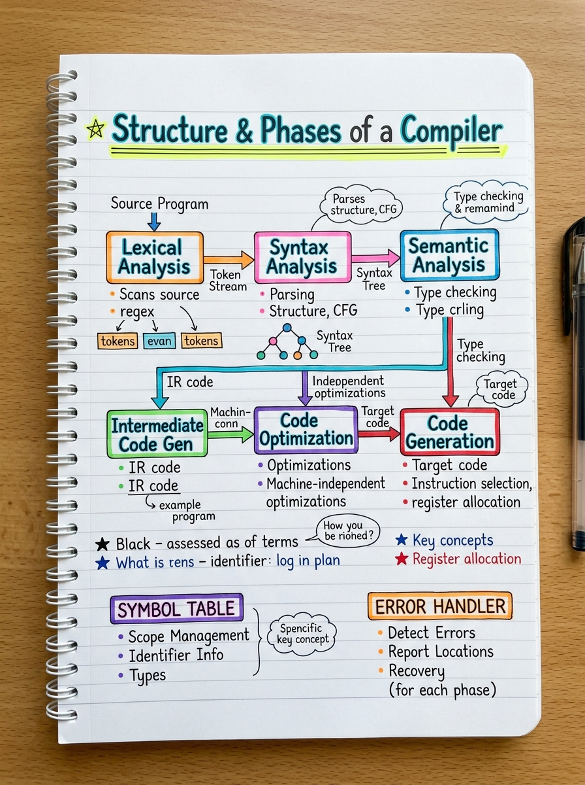
Handwritten Blueprint: 6 Phases, Analysis/Synthesis Division, Symbol Table, and Error Handler
position = initial + rate * 60)
LDF R2, id3; MULF R2, R2, #60.0; STF id1, R1)
Communicates bidirectionally with ALL 6 PHASES. Central repository storing identifier names, types, memory addresses, scopes, and function signatures.
Intercepts errors across ALL 6 PHASES (lexical typos, syntax misplacements, semantic type mismatches) and reports line numbers while attempting recovery.
| Phase Name | Input & Output | Core Working / What It Does | Real Example Action |
|---|---|---|---|
| 1. Lexical Analyzer | Char Stream ➔ Tokens | Strips spaces & comments, identifies lexemes using regex patterns, enters names into Symbol Table. | Converts rate * 60 ➔ <id, 3> <*> <num, 60> |
| 2. Syntax Analyzer | Tokens ➔ Parse Tree | Verifies grammatical rules using Context-Free Grammars (CFG); enforces operator precedence. | Places * lower in tree than + so multiplication evaluates first. |
| 3. Semantic Analyzer | Parse Tree ➔ Decorated AST | Checks types, array bounds, declaration scopes; applies type coercion (implicit conversion). | Detects rate is float, so wraps integer 60 in inttofloat(60). |
| 4. Intermediate Code Gen | Decorated AST ➔ 3-Address Code | Produces linear, machine-independent representation with maximum 1 operator on right side. | Generates:t1 = inttofloat(60)t2 = id3 * t1 |
| 5. Code Optimizer | 3-Address Code ➔ Optimized TAC | Executes constant folding, dead code elimination, and common subexpression elimination. | Folds constant at compile-time: eliminates inttofloat ➔ computes 60.0 directly! |
| 6. Code Generator | Optimized TAC ➔ Assembly Code | Maps variables to physical CPU registers (`R1, R2`) and emits native target machine opcodes. | Emits assembly instructions:LDF R2, id3MULF R2, R2, #60.0 |
The Symbol Table is the central data structure built by the Lexical Analyzer and consulted/updated by every single subsequent phase. It stores the following metadata attributes for every identifier:
The exact source text character string (e.g., "total_score").
int, float, char, pointer, struct, void.
Relative byte offset in activation record / stack frame (e.g., offset + 12).
Global, local function scope, or nested block loop level.
Source code line number for diagnostic error reporting.
Number of parameters, parameter types, return type, calling convention.
| Compiler Phase | Error Class Detected | Real Code Error Example |
|---|---|---|
| Lexical Analyzer | Lexical Errors | Illegal symbol int x = @#$ + 5; or unclosed string "hello |
| Syntax Analyzer | Syntax Errors | Grammar violations: missing semicolon int a = 5, unbalanced parentheses (x + y * |
| Semantic Analyzer | Semantic Errors | Type mismatch int a = "text";, using undeclared variable z = 10;, duplicate declaration |
int, float, while, return) = 1 Token.main, printf, i, count) = 1 Token.42, 3.14) and entire string enclosed in quotes (e.g., "Hello %d\n") = 1 Single Token!+, -, *, =, &) = 1 Token. Multi-character operators (++, --, <=, >=, ==, !=) = 1 Single Token!;, comma ,, parenthesis (, ), brace {, } = 1 Token each.// ...) = 0 Tokens (discarded by scanner).
Question: How many tokens are present in the statement: printf("i = %d, &i = %x", i, &i);?
| Token # | Lexeme | Token Category | Examiner Note |
|---|---|---|---|
| 1 | printf | Identifier | Function name |
| 2 | ( | Punctuation / Delimiter | Opening bracket |
| 3 | "i = %d, &i = %x" | String Literal | Entire quoted string is 1 token! |
| 4 | , | Punctuation | Comma separator |
| 5 | i | Identifier | Variable name |
| 6 | , | Punctuation | Comma separator |
| 7 | & | Operator | Address-of operator |
| 8 | i | Identifier | Variable name |
| 9 | ) | Punctuation / Delimiter | Closing bracket |
| 10 | ; | Punctuation / Delimiter | Statement terminator |
Token Breakdown:
[1: while] [2: (] [3: i] [4: <=] [5: 10] [6: )] [7: {] [8: i] [9: ++] [10: ;] [11: }]
<= is 1 token (relational operator), and ++ is 1 token (increment operator). Do NOT count them as two separate characters!
Token Breakdown:
[1: char] [2: *] [3: str] [4: =] [5: "Compiler Design"] [6: ;]
Before studying the phases, understand why compilers are built this way in simple words:
Answer (3 Simple Real-World Reasons):
• Phase (Logical Concept): An abstract step that performs one specific job (like Scanning, Parsing, Type Checking).
• Pass (Physical Concept): One full reading/traversal of the source code or intermediate file from start to finish.
Example: A Single-Pass compiler runs all 6 phases interleaved together in memory in 1 scan. A Multi-Pass compiler writes intermediate files to disk and traverses them multiple times.
• Scans characters left-to-right, strips spaces and comments, and outputs Tokens: <token_name, attribute_value>.
• Validates token orders against grammar rules using Context-Free Grammars and builds the Syntax Tree.
• Verifies data types. If types don't match, it inserts an implicit type conversion node (e.g., integer 60 converted to float 60.0).
• Translates the tree into machine-independent Three-Address Code (TAC) with at most 1 operator per line.
• Makes the code run faster and consume less memory using techniques like Constant Folding and Dead Code Elimination.
• Maps intermediate instructions to target CPU registers (R1, R2) and generates assembly code.
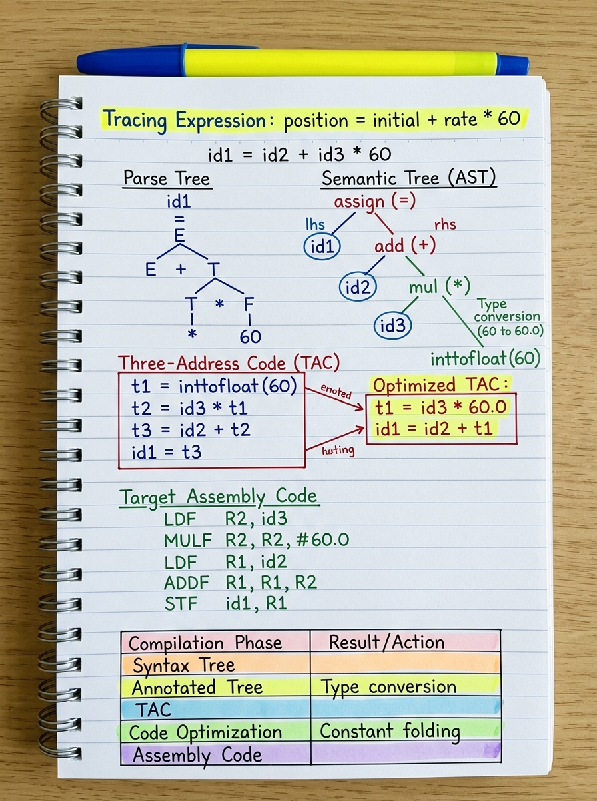
1. Scanner reads position ➔ looks up Symbol Table ➔ not found ➔ enters it as entry #1 ➔ emits <id, 1>.
2. Reads = ➔ emits operator token <=>.
3. Reads initial (entry #2), +, rate (entry #3), *, and number 60 (emits <num, 60>).
• In computer grammars, Multiplication (*) has higher precedence than Addition (+).
• In tree execution, lower nodes execute first. Therefore, (id3 * 60) sits below + so it is calculated first!
• rate is float, but 60 is an integer.
• The CPU multiplier circuit cannot multiply integer bit formats directly with floating-point formats. The compiler injects an automatic type conversion: inttofloat(60).
1. First convert constant: t1 = inttofloat(60)
2. Multiply rate with t1: t2 = id3 * t1
3. Add initial to product: t3 = id2 + t2
4. Assign final sum: id1 = t3
• Why convert 60 to float during execution? The compiler computes inttofloat(60) = 60.0 once at compile-time!
• Redundant temporary copies are removed, cutting 4 lines down to 2 lines.
• LDF = Load Float into register.
• MULF / ADDF = Multiply / Add Float registers.
• STF = Store Float register back to RAM memory.
Imagine writing a C compiler by hand: you would need to write thousands of lines of messy while loops and nested switch-case statements just to check character by character whether an input is a keyword, identifier, or number. It is tedious and full of bugs!
So computer scientists built a Robot Programmer called LEX (or FLEX):
• You only give it a clean list of Regular Expressions and what to do (the actions).
• The LEX generator does all the heavy math and automatically writes a complete, lightning-fast C scanner program (lex.yy.c) for you!
A Lexical Analyzer Generator is a specialized compiler construction software tool that takes a high-level declarative specification of tokens (written in regular expressions) and automatically produces an executable scanner program.
• Developed by Mike Lesk and Eric Schmidt at Bell Labs.
• Standard Unix tool for generating C-based lexical analyzers.
• Standard library flag: -ll.
• GNU open-source rewrite by Vern Paxson.
• Significantly faster execution, zero table size limitations, 8-bit clean.
• Standard library flag: -lfl.
Every LEX program is saved with a .l extension and is strictly divided into three distinct sections separated by %% delimiters:
How does a .l file become an executable scanner? The entire transformation proceeds in 4 sequential phases:
Students often wonder: "What actually happens inside lex.yy.c?"
LEX is nothing but an automated pipeline of all the automata algorithms we learned:
lex.yy.c contains a 2D integer array yy_transition[state][char] and a loop that runs in pure O(N) linear time!
| Variable / Function | Type | Exact Purpose (Exam Definitions) |
|---|---|---|
yytext |
char* |
Pointer to the null-terminated matched string (the current lexeme). |
yyleng |
int |
Length of the matched lexeme (number of characters in yytext). |
yylex() |
int func() |
The core scanner engine. Repeatedly called by the parser to fetch the next token. |
yyin |
FILE* |
Pointer to the input stream (default is stdin). Set to file pointer to read from disk. |
yyout |
FILE* |
Pointer to the output destination (default is stdout). |
yywrap() |
int func() |
Called when EOF is reached. Return 1 to terminate scanning; return 0 to switch files. |
yylineno |
int |
Automatically keeps track of the current line number for precise syntax error reporting. |
yymore() |
void func() |
Tells LEX not to discard yytext; the next matched token will be appended to it. |
yyless(n) |
void func(n) |
Retains only the first n characters in yytext, returning the rest to the input buffer. |
integer, both int (Keyword) and [a-z]+ (Identifier) match. LEX picks Identifier because 7 characters > 3 characters!
"if" matches both "if" and [a-zA-Z][a-zA-Z0-9]* (length 2). Because keywords are placed higher up in the file, "if" is correctly recognized as a Keyword, not a variable name!
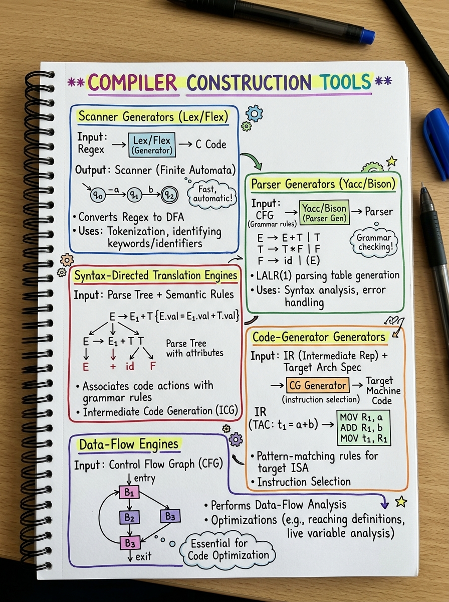
💡 Plain English Explanation: The data-flow engine tracks what variable definitions reach Block 4 from all paths to safely remove dead code and assign hardware registers!
| Comparison Factor | Single-Pass Compiler | Multi-Pass Compiler |
|---|---|---|
| 1. Number of Scans | Scans source program only once. | Traverses code or files two or more times. |
| 2. Compilation Speed | Extremely Fast (no disk I/O between passes). | Slower (must write/read intermediate structures). |
| 3. Memory (RAM) Consumption | High active RAM requirement (all tables stay in RAM). | Low RAM per pass (frees memory between passes). |
| 4. Optimization Scope | Very limited / local optimizations only. | Global, whole-program optimization. |
| 5. Forward References | Difficult (requires forward declarations). | Easily handled across passes. |
| 6. Examples | Turbo Pascal | GCC, Clang/LLVM, Java javac |
| Category | Sample Lexemes (in Code) | Pattern (The Rule) | Token Emitted to Parser |
|---|---|---|---|
| Keyword | while, if, int |
Exact characters: while |
<WHILE, -> |
| Identifier | count, rate |
Letter followed by letters/digits | <id, entry_ptr> |
| Number | 42, 3.14 |
One or more digits with optional dot | <num, 42> |
| Relational Op | <=, ==, != |
Comparison characters | <relop, LE> |
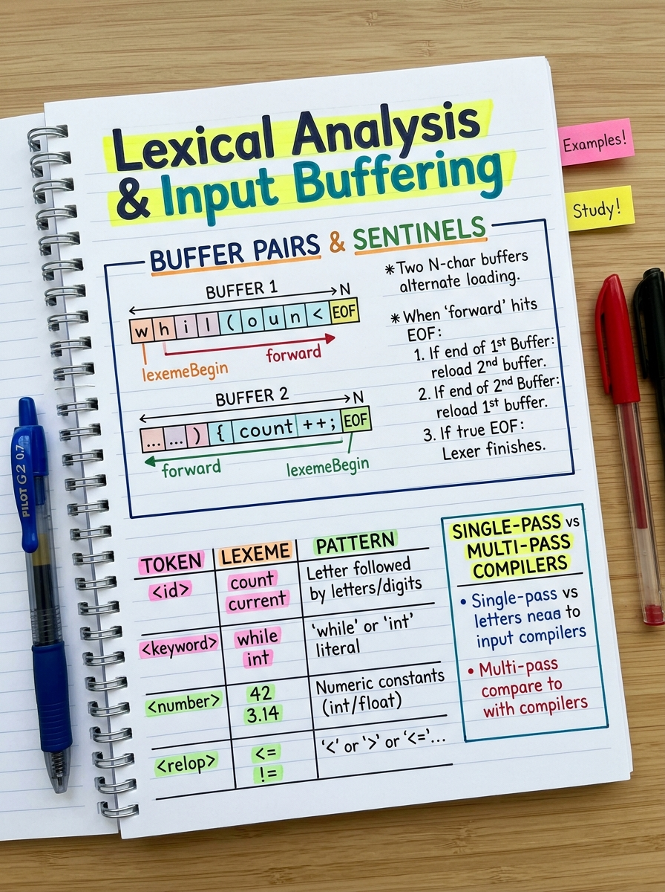
Directly return token / advance state.
Check boundary condition:
| Metric | Without Sentinels | With Sentinels (EOF at End) |
|---|---|---|
| Checks per character | 2 checks (boundary check + character switch) | Only 1 check in the common fast path |
| Speed Gain | Baseline | ~40% to 50% faster inner scanning loop |
• What a Scanner CAN Detect: A lexical error occurs when a sequence of incoming characters cannot be matched to ANY predefined regular expression pattern (e.g., an illegal symbol @ inside a C identifier, an unclosed string literal "hello before a newline, or an ill-formed numeric constant like 123.45.67).
• What a Scanner CANNOT Detect: A scanner has no concept of grammar or types! If you write x = y + * 5; (syntax error) or int a = "text"; (semantic error), the scanner happily emits valid tokens! It leaves those errors to the parser and semantic analyzer.
If a compiler crashed on the very first single typo on line 3 of a 5,000-line program, the programmer would have to recompile 100 times to fix 100 small typos! The Golden Rule of Compilers: Report as many legitimate diagnostic errors as possible in a single compilation pass while avoiding cascading "ghost" errors.
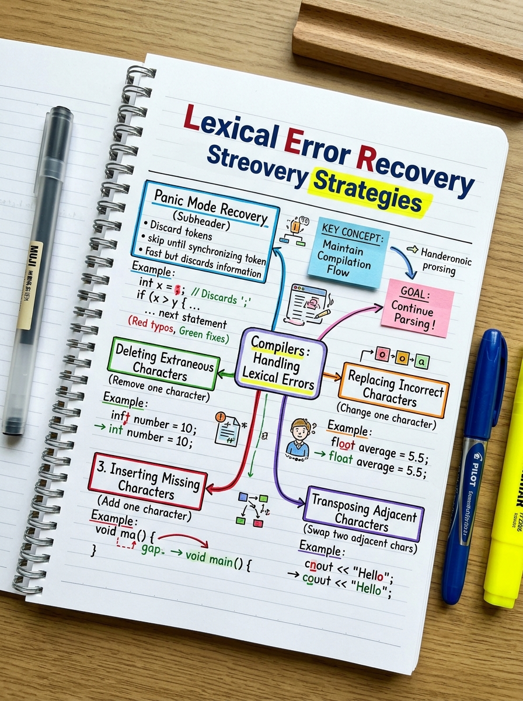
Discards successive characters from input one-by-one until a valid token prefix or synchronizing delimiter (space, semicolon) is reached.
Removes one extra rogue character that prevents a valid lexeme from matching.
Inserts a single character that was accidentally omitted by the programmer.
Replaces an erroneous character with an expected valid character.
Swaps two adjacent characters that were typed in reversed order (common typing slip).
How it works: When the scanner hits a character that cannot begin any valid token, it enters "panic" and drops characters one-by-one until it hits a safe delimiter.
How it works: Common when a key is pressed too long (e.g., double typing `ii` or accidental key).
How it works: The programmer types fast and misses a letter at the end or inside a keyword.
How it works: The programmer pressed a neighboring key on the keyboard (e.g., `x` instead of `o`).
How it works: Very common touch-typing slip where the right hand hits the key before the left hand.
| Strategy | Transformation Mechanism | Real Code Typo | Corrected Token Emitted | Compiler Cost / Trade-Off |
|---|---|---|---|---|
| 1. Panic Mode | Deletes incoming characters until a recognizable token is seen | int a = @#$ + 10; |
Skips @#$, emits <+> |
Simplest & fastest; never loops infinitely, but discards code. |
| 2. Deleting Extraneous Char | Deletes 1 surplus character | whiile (count > 0) |
<KEYWORD_WHILE> |
Low cost; highly effective for duplicate keystrokes. |
| 3. Inserting Missing Char | Injects 1 missing character | floa temp = 36.5; |
<KEYWORD_FLOAT> |
Moderate; requires dictionary lookup of keywords. |
| 4. Replacing Incorrect Char | Substitutes 1 wrong character | flxat score = 99.0; |
<KEYWORD_FLOAT> |
Moderate; checks keywords with 1-character difference. |
| 5. Transposing Adjacent Chars | Swaps 2 neighboring characters | retrun 0; |
<KEYWORD_RETURN> |
Very common human error fix; prevents cascading syntax errors. |
Before drawing, keep these 4 universal mathematical guarantees in mind:
Just like standard BODMAS in arithmetic, regular expressions have strict binding rules:
Example: a | b * c actually means (a) | ((b*) . c)!
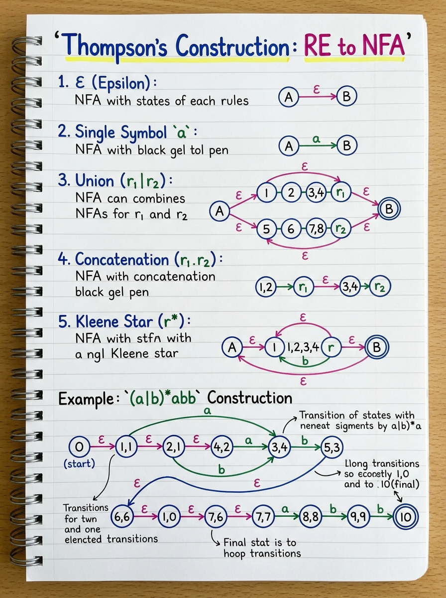
Accepts empty string without consuming any input.
Transitions on consuming exact character 'a'.
Executes NFA for r1 first, then directly links its final state to the start state of r2.
Creates a NEW start state branching with ε to both options, and merges both outputs into a NEW final state.
Allows 0 or more repetitions of r. Requires 2 NEW states (New Start & New Final) and 4 distinct ε-paths:
• Path 1 (Bypass / Zero Occurrences): New Start ──ε──> New Final (Allows matching empty string ε!).
• Path 2 (Enter): New Start ──ε──> Start of N(r) (Enters the first iteration).
• Path 3 (Loop Back / Repetition): Final of N(r) ──ε──> Start of N(r) (Loops back for 2nd, 3rd, 4th... iterations).
• Path 4 (Exit): Final of N(r) ──ε──> New Final (Exits to the accepting state).
Means 1 or more occurrences (r⁺ = r · r*). Exactly identical to Kleene Star WITHOUT the bypass path from Start to Final!
Explanation: In Thompson's algorithm, any single character symbol from the alphabet is represented by exactly 2 states connected by a single directed edge labeled with that character. We assign:
'a': State (2) transitions on 'a' to state (3).'b': State (4) transitions on 'b' to state (5).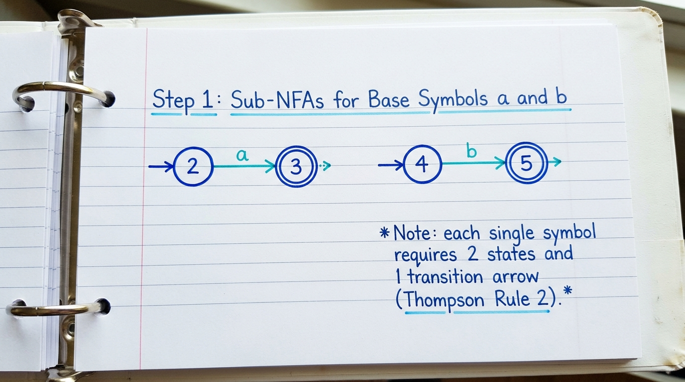
Handwritten Diagram 1: Base symbol transitions (2)──a──>(3) and (4)──b──>(5)
Explanation: The union operator | allows a choice between the upper branch 'a' and the lower branch 'b'. To implement this without guessing:
ε to state (2) and state (4).ε transitions into a new intermediate state (6).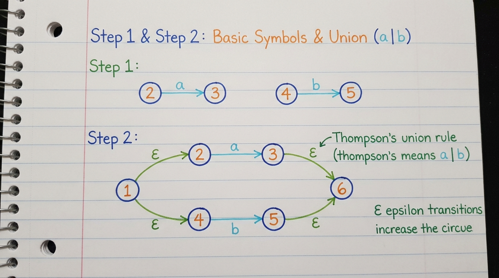
Handwritten Diagram 2: Union sub-machine branching from (1) and converging at (6)
Explanation: The Kleene star * represents zero or more repetitions. Thompson's construction encloses the union block (states 1 to 6) inside 2 new states:
(0) ──ε──> (1) enters the first iteration.(6) ──ε──> (7) exits to the outside world.(6) ──ε──> (1) loops underneath to allow repeating (a | b) multiple times!(0) ──ε──> (7) arcs over the very top to allow 0 repetitions (empty string ε)!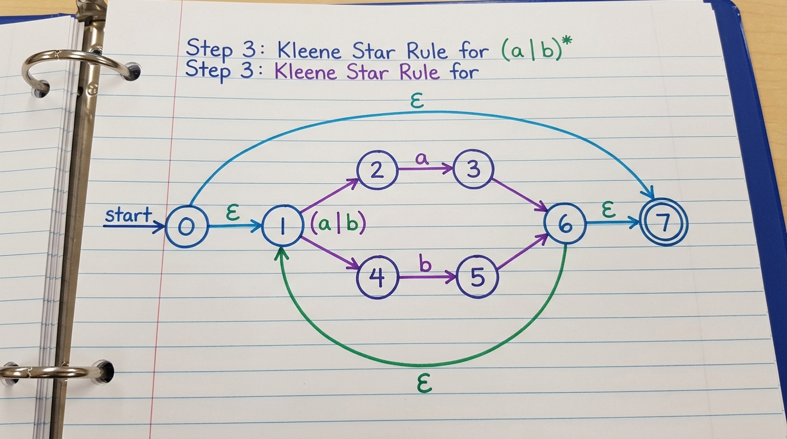
Handwritten Diagram 3: Kleene star sub-machine with top bypass ε and bottom loopback ε
Explanation: Concatenation is sequential. The sub-expression abb means a followed immediately by b, followed by b. We extend from the exit state (7):
'a' to state (8).'b' to state (9).'b' to state ((10)).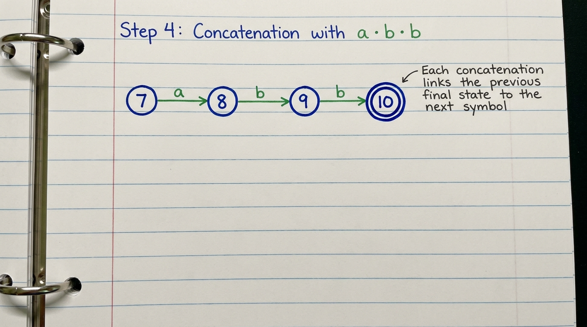
Handwritten Diagram 4: Linear concatenation sequence (7)──a──>(8)──b──>(9)──b──>((10))
Final Assembly: Merging Steps 1, 2, 3, and 4 produces the complete 11-state automaton (states 0 through 10). Notice how every single rule fits seamlessly together without any ad-hoc guesswork:
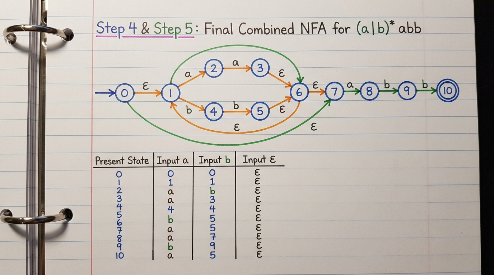
Handwritten Master Diagram: Fully assembled Thompson NFA for (a | b)* abb
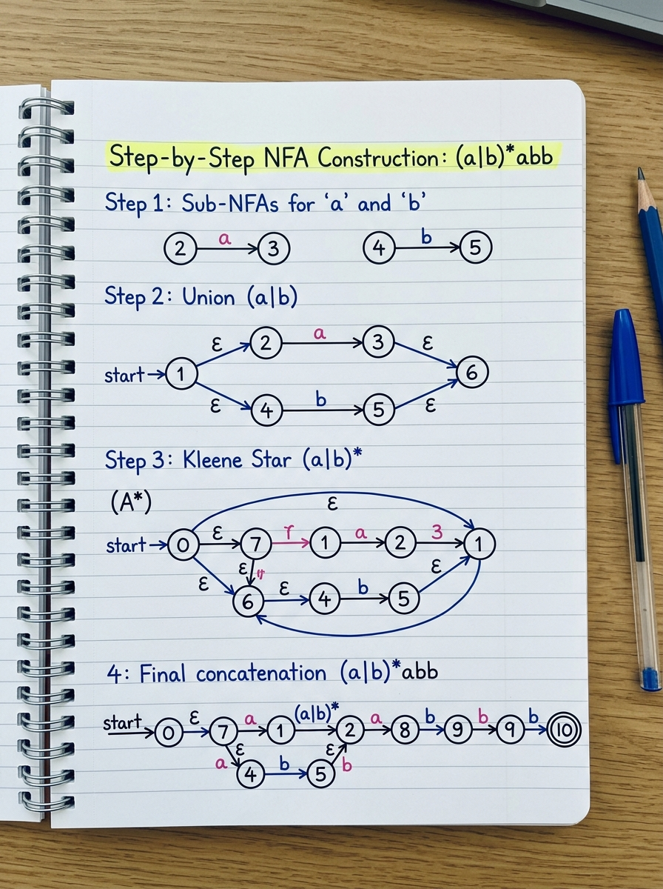
Handwritten Reference Sheet: All 5 steps shown side-by-side with state numbering
| State (s) | Input 'a' | Input 'b' | Input 'ε' (Epsilon) | State Role / Significance |
|---|---|---|---|---|
| 0 (Start) | ∅ | ∅ | {1, 7} | Initial state (branches into star loop or bypass) |
| 1 | ∅ | ∅ | {2, 4} | Union fork (branches to 'a' or 'b' paths) |
| 2 | {3} | ∅ | ∅ | Upper branch input consumer for 'a' |
| 3 | ∅ | ∅ | {6} | Upper branch collector to union join |
| 4 | ∅ | {5} | ∅ | Lower branch input consumer for 'b' |
| 5 | ∅ | ∅ | {6} | Lower branch collector to union join |
| 6 | ∅ | ∅ | {1, 7} | Union exit (loops back to 1 or exits to 7) |
| 7 | {8} | ∅ | ∅ | Star exit state; begins matching final 'a' |
| 8 | ∅ | {9} | ∅ | Matches first 'b' of trailer 'abb' |
| 9 | ∅ | {10} | ∅ | Matches second 'b' of trailer 'abb' |
| ((10)) Final | ∅ | ∅ | ∅ | Accepting State (Double circle) |
• Identical Structural Topology: Notice that (0 + 1)* 011 is isomorphically identical to (a | b)* abb. Simply map symbol a ➔ 0, symbol b ➔ 1, and union symbol | ➔ +.
A Regular Expression (RE) is a mathematical declarative notation for specifying patterns of characters over an alphabet Σ. The language denoted by an RE r is denoted as L(r). It is defined recursively using only 3 foundational operations:
A Regular Expression has zero memory (cannot count)! Therefore, any language that requires balancing or matching two independent counts (e.g., nested parentheses ((...)), palindrome strings w·wᴿ (Palindromes), or the classic language L = { aⁿbⁿ | n ≥ 1 }) CANNOT be defined using a Regular Expression! Such languages require a Context-Free Grammar (CFG) and a Pushdown Automaton with a stack memory.
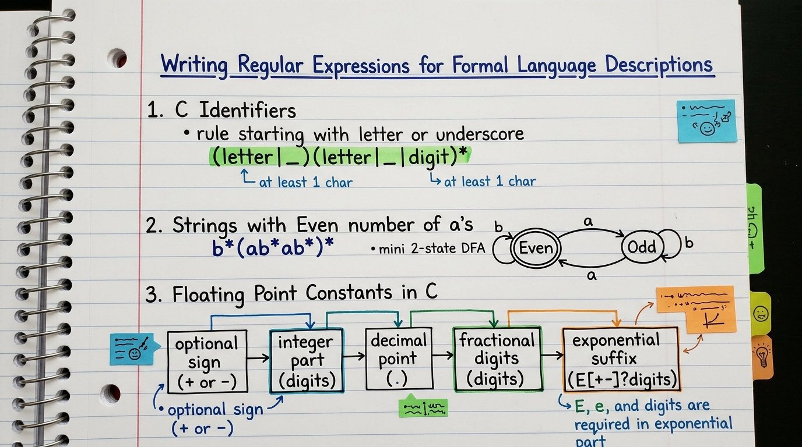
Handwritten Blueprint: C Identifiers, Even a's DFA, and Floating-Point Constant Architecture
| Law Name | Mathematical Identity | Compiler Intuition / Optimization |
|---|---|---|
| Commutativity of Union | r | s = s | r |
The order of alternatives in a choice does not affect the accepted language. |
| Associativity of Union & Concat | (r | s) | t = r | (s | t)(r s) t = r (s t) |
Grouping of adjacent sequences or unions can be re-bracketed freely. |
| Distributivity | r (s | t) = rs | rt(s | t) r = sr | tr |
Factoring out common prefixes (Left-factoring optimization in scanners). |
| Identity Elements | ε r = r ε = rr | ∅ = r |
Concatenating empty string or union with empty set leaves pattern unchanged. |
| Idempotence of Star | (r*)* = r*r** = r* |
Repeating a repetition does not add new strings. |
| Arden's Theorem | If P = Q + PR and ε ∉ R, then P = Q R* |
Used to convert state transition systems directly into closed-form Regular Expressions! |
We first define our primitive sets using shorthand regular notation:
(letter | _)(letter | _ | digit)*[a-zA-Z_][a-zA-Z0-9_]*
[a-zA-Z0-9_]
(Repeats indefinitely for any length of identifier)
If identifiers were permitted to begin with a digit (e.g., 2total or 1234a), the lexical scanner would suffer catastrophic token ambiguity:
1234, is it an integer constant or the beginning of an identifier?123e4, is it a floating-point scientific constant (123 × 10⁴) or an identifier named 123e4?Notice that the word while matches the identifier regex [a-zA-Z_][a-zA-Z0-9_]* perfectly! Why does the scanner emit <KEYWORD_WHILE> instead of <id, while>? Two methods are used:
.l lex file. Lex applies the first matching rule.<id> token.| Candidate Lexeme | Status | Lexical Analyzer Action / Reason |
|---|---|---|
count_1 |
✅ Valid | Starts with letter c, followed by letters, underscore, digit. |
_tempData |
✅ Valid | Leading underscore is 100% legal in C (often used in library headers). |
MAX_CAPACITY |
✅ Valid | Uppercase letters and underscores. |
2sum |
❌ INVALID | Starts with digit 2. Scanner splits into <num, 2> and <id, sum>. |
my-variable |
❌ INVALID | Hyphen - is not an underscore! Scanner emits <id, my> <-> <id, variable>. |
int |
⚠️ Reserved | Matches regex, but intercepted as <KEYWORD_INT> by Symbol Table. |
The language condition only restricts the count of 'a'. The symbol 'b' has absolutely no impact on parity! Any number of b's can appear at the start, at the end, or between any two a's (represented as b*).
To maintain an even parity (0, 2, 4, 6, ...), a's must always be introduced in pairs. Between the two a's of a pair, an arbitrary number of b's may occur:
Both of the following representations are 100% mathematically correct in university exams:
💡 Observation: Consuming an a toggles the state between Even and Odd. Consuming a b leaves the state unchanged.
| Language Description | Regular Expression Formula | DFA State Configuration |
|---|---|---|
| Even number of a's | b* (a b* a b*)* or (b | a b* a)* |
Start = q_even, Final = {q_even} |
| ODD number of a's | b* a b* (a b* a b*)* or (b | a b* a)* a b* |
Start = q_even, Final = {q_odd} |
| At least two a's | (a | b)* a (a | b)* a (a | b)* |
3-state linear counting chain (q0 ➔ q1 ➔ q2) |
| Even a's AND Even b's | (aa | bb | (ab | ba)(aa | bb)*(ab | ba))* |
4-state product automaton (states (EE, EO, OE, OO)) |
A valid floating point number in C cannot be just a bare decimal point .. It must satisfy one of these 3 forms:
digits . digits (e.g., 3.1415)digits . (e.g., 10. in C represents 10.0). digits (e.g., .5 in C represents 0.5)In scientific notation (like 6.02 × 10²³ or 1.6 × 10⁻¹⁹):
'E' or 'e'.'+' or '-'.digits.
💡 Compiler Note: If the number has no decimal point (e.g., 1e5), it MUST have an exponent; otherwise it is simply an integer!
| Input Constant | Status | Mantissa Type | Exponent Part | Semantic Value |
|---|---|---|---|---|
3.14159 |
✅ Valid | Standard decimal | None | 3.14159 |
.707 |
✅ Valid | Leading dot omitted int | None | 0.707 |
100. |
✅ Valid | Trailing dot omitted frac | None | 100.0 |
2.5e-3 |
✅ Valid | Standard decimal | Negative scientific | 0.0025 |
1E+6 |
✅ Valid | Integer with exponent | Positive scientific | 1,000,000.0 |
. |
❌ INVALID | Dot alone | None | Lexical error (or member access op) |
12.34.56 |
❌ INVALID | Two decimal points | None | Lexical error |
5.0e |
❌ INVALID | Missing exponent digits | Truncated | Lexical error: Expected digits after 'e' |
Over alphabet Σ = {a, b}. String must be at least length 2 ('ab').
Every 'a' must be followed by at least one 'b', with optional trailing 'a'.
Length n = 0, 3, 6, 9... over alphabet Σ = {a, b}.
Either 'a' appears before 'b', or 'b' appears before 'a'.
Starts with '//' followed by any characters except newline, ending in newline.
Handles asterisks correctly without stopping prematurely at lone '*'.
Alphabet Σ = {0, 1}. Suffix must be exactly '01'.
Four concatenated choices of (a | b).
❌ Trap 1: Confusing Empty String (ε) with Empty Set (∅): r | ε makes pattern r optional (can be skipped), whereas r | ∅ = r does not accept empty string!
❌ Trap 2: Greedy Multi-Line Comment Flaw: Writing /\* .*\* \/ is flawed in compilers because .* is greedy and will swallow multiple separate comments into one giant token!
❌ Trap 3: Forgetting Parity Base Cases: Remember that zero is even! Any regex for "even number of symbols" must accept the empty string ε.
While an NFA is easier to draw from regular expressions (via Thompson's construction), an NFA has non-deterministic choices and ε-transitions, meaning it could be in multiple states simultaneously, requiring expensive backtracking or set simulation (O(M × N) time). A DFA has exactly one deterministic transition per input symbol with zero ε-transitions. Hence, a DFA can recognize a token in purely linear time O(N) (where N is the length of source code), running at multi-megabytes per second in a real compiler scanner!
| Pattern Type | Physical Machine Behavior | Accepting State Property | Reset / Fallback Strategy |
|---|---|---|---|
| "Ending With X" (e.g., ends with 01) |
Transient / Memory of recent symbols | Active Exit State: Further input can kick the machine OUT of the final state! | Look for longest matching suffix when sequence breaks. |
| "Containing Substring X" (e.g., contains aba) |
Permanent / Memory of past discovery | Trap / Dead-End State: Once the substring is matched, the machine stays in the final state forever! | Self-loops on all symbols at accepting state. |
The shortest string ending in 01 is "01" (length 2). We create 2 + 1 = 3 states in a direct forward pipeline:
• q0 (Start): On input '0' ➔ Advances to q1 (matched leading '0').
• q1: On input '1' ➔ Advances to q2 (Success! Matched "01", Double Circle).
• At State q0 on '1': A leading '1' alone is useless; string still does not have a leading '0'. Self-loop on q0 with '1'.
• At State q1 on '0': History becomes "...00". The last seen character is still '0', which can serve as the first character of "01"! So we stay at q1 via self-loop on '0'.
Once at q2 (History: "...01"), what happens if another symbol arrives?
• On input '0': History becomes "...010". The suffix ends with '0', which is 1 character away from "01"! ➔ Transitions to q1 (curved underneath).
• On input '1': History becomes "...011". Suffix is neither '01' nor '0'. The progress is completely lost! ➔ Resets all the way back to q0.
| Current State | Input '0' | Input '1' | Parity / Suffix Meaning |
|---|---|---|---|
| ➔ q0 (Start) | q1 | q0 | Trailing symbol is not '0' |
| q1 | q1 | q2 | Trailing symbol is '0' (one step away from 01) |
| * ((q2)) Final | q1 | q0 | Accepting: Suffix is '01' |
Converting the 3-state DFA into a closed-form Regular Expression by systematically removing states:
Create unique entry state q_in with an ε-transition to q0, and unique exit state q_out with an ε-transition from old accepting state q2.
Bypass q1 using formula: R'(q0 ➔ q2) = R(q0 ➔ q1) · (R(q1 ➔ q1))* · R(q1 ➔ q2) = 0·0*·1.
Return from q2 back to q2 via q1 is: 0·0*·1. Notice that q0 and q2 can loop on arbitrary combinations of 0's and 1's!
All loops prior to the final 01 generate any sequence of 0's and 1's: (0 | 1)*. The unique required termination is 01.
Thus, the entire automaton collapses into a single direct transition from q_in to q_out:
r = (0 | 1)* 01 (Q.E.D.)
In substring recognition, once the pattern aba appears anywhere in the input, the string is permanently accepted regardless of what characters come later! Therefore, the final state q3 is a TRAP STATE with self-loops on both a and b.
The minimal string containing "aba" is "aba" (length 3). We lay out 3 + 1 = 4 states in a progressive recognition chain:
• q0 (Start): On 'a' ➔ Advances to q1 (matched 'a').
• q1: On 'b' ➔ Advances to q2 (matched 'ab').
• q2: On 'a' ➔ Advances to q3 (Success! Matched "aba", Double Circle).
In substring recognition, once aba appears, the condition is met forever! No future character can ever invalidate the substring.
➔ State q3 is an absorbing TRAP STATE with permanent self-loops on both 'a' and 'b'.
• At q0 on 'b': Still no 'a'; stays in q0 (loop on 'b').
• At q1 on 'a' (History: "...aa"): The last character is still 'a', preserving the prefix of 'aba'! ➔ Self-loop at q1 on 'a'.
• At q2 on 'b' (History: "...abb"): Suffix is neither "aba" nor "ab" nor "a". Pattern is destroyed! ➔ Resets all the way to q0.
| Current State | Input 'a' | Input 'b' | Matched Prefix Status |
|---|---|---|---|
| ➔ q0 (Start) | q1 | q0 | No matching prefix yet |
| q1 | q1 | q2 | Matched prefix 'a' |
| q2 | q3 | q0 | Matched prefix 'ab' (ready for final 'a'!) |
| * ((q3)) Trap Final | q3 | q3 | Accepting State: 'aba' matched anywhere in string |
Converting the Substring Automaton into Regular Expression (a | b)* aba (a | b)* step-by-step:
Add q_in with an ε-transition to q0, and q_out with an ε-transition from trap final state q3.
Bypassing q1 and q2 merges the chain into: R'(q0 ➔ q3) = a · b · a = aba.
Prefix loops at q0 accept any prior characters: (a | b)*. Suffix loops at q3 accept any subsequent characters: (a | b)*.
Prefix loop (a | b)* + Exact match sequence aba + Suffix trap loop (a | b)*:
r = (a | b)* aba (a | b)* (Q.E.D.)
• Create a NEW unique start state q_in with an ε-transition to the original start state q0.
• Create a NEW unique final state q_out with ε-transitions from all original accepting states.
When eliminating any intermediate state q_k, replace each incoming path from q_i and outgoing path to q_j using the bypass formula:
Repeat Step 2 until only q_in and q_out remain. The regular expression labeling the single arrow from q_in ➔ q_out is the exact, complete Regular Expression!
❌ Trap 1: Incomplete DFA States (Missing Transitions): In an NFA, missing transitions simply reject the string. But in a DFA, every state must have exactly one outgoing edge for every alphabet symbol! Forgetting a self-loop or dead-state transition will cost you 40% of the question marks.
❌ Trap 2: Forgetting the Self-Loop Star (R_kk)* in Elimination: When eliminating a state with a self-loop, students frequently write R_ik · R_kj instead of R_ik · (R_kk)* · R_kj. Always star the self-loop!
❌ Trap 3: Confusing "Ending With" and "Containing": Remember: "Ending with" DFAs can exit the final state upon reading new characters. "Substring" DFAs trap the machine in the final state forever.
Imagine you are playing an adventure game inside an enchanted castle:
• Normal Doors: Require a key (symbol 'a' or 'b'). Opening a door consumes your key.
• ε (Epsilon) Doors: Are FREE TELEPORTATION PORTALS! You can walk through them instantly with zero keys and zero cost!
• Because of free portals, you can simultaneously exist in 5 different rooms at once!
• A physical computer CPU cannot be in 5 places simultaneously. So compilers take every possible team or bundle of rooms you could be in, and rename that whole bundle into one single DFA state (A, B, C, D...)!
• Multiple branching paths on the same character.
• Free spontaneous jumps (ε-transitions).
• Computers cannot guess which branch will succeed; simulating it requires slow backtracking with O(M × N) complexity!
• Exactly ONE deterministic choice per character.
• Zero ε-portals (all free jumps are pre-computed into subsets!).
• Scans millions of lines of source code in lightning-fast linear time O(N)!
The ε-closure of a state s is the set of all states reachable from s using only free ε-transitions:
Check every newly generated DFA state (composite subset).
If the subset contains even ONE original accepting state from the NFA, then this entire subset is drawn with a DOUBLE CIRCLE (Final Accepting State)!
move(State, 'a') = 'a' ka ticket kharch karke hum kaunse kamro mein pahuche?ε-closure = waha pahunchte hi free portals se aur kaha-kaha phail sakte hain?Start state is 0. Final accepting state is ((10)).
Start at NFA initial state 0 and follow all free ε-portals:
• State 0 is included (0-step reach).
• Follow free ε: 0 ➔ 1, then 1 ➔ 2, and 1 ➔ 4.
• Follow bypass ε: 0 ➔ 7.
➔ DFA Initial State A = { 0, 1, 2, 4, 7 }
1. On Input 'a':
• Who has an arrow on 'a'? State 2 ➔ 3 and State 7 ➔ 8.
• Landing states: move(A, a) = { 3, 8 }.
• Expand free ε-portals from {3, 8}: 3 ➔ 6 ➔ 7 and 6 ➔ 1 ➔ {2, 4}.
➔ New State B = ε-closure({ 3, 8 }) = { 1, 2, 3, 4, 6, 7, 8 }
2. On Input 'b':
• Who has an arrow on 'b'? Only State 4 ➔ 5.
• Landing state: move(A, b) = { 5 }.
• Expand free ε-portals from {5}: 5 ➔ 6 ➔ 7 and 6 ➔ 1 ➔ {2, 4}.
➔ New State C = ε-closure({ 5 }) = { 1, 2, 4, 5, 6, 7 }
1. On Input 'a':
• States 2 and 7 move to {3, 8}. Taking ε-closure returns identical set { 1, 2, 3, 4, 6, 7, 8 }.
➔ Stays at State B (Self-loop on 'a'!).
2. On Input 'b':
• State 4 ➔ 5 and State 8 ➔ 9!
• Landing states: move(B, b) = { 5, 9 }.
• Taking ε-closure: 5 ➔ {1, 2, 4, 6, 7} and State 9 has no ε.
➔ New State D = ε-closure({ 5, 9 }) = { 1, 2, 4, 5, 6, 7, 9 } (Now matched "ab"!).
1. On Input 'a': States 2 and 7 move to {3, 8} ➔ Leads to State B.
2. On Input 'b': State 4 moves to 5 ➔ Returns identical set { 1, 2, 4, 5, 6, 7 }.
➔ Stays at State C (Self-loop on 'b'!).
1. On Input 'a': States 2 and 7 move to {3, 8} ➔ Leads back to State B.
2. On Input 'b':
• State 4 ➔ 5 and State 9 ➔ 10!
• Landing states: move(D, b) = { 5, 10 }.
• Taking ε-closure: 5 ➔ {1, 2, 4, 6, 7} and State 10 has no ε-edges.
➔ New State E = ε-closure({ 5, 10 }) = { 1, 2, 4, 5, 6, 7, 10 }
🔥 JACKPOT: State 10 is the original NFA Final State! Therefore, STATE E IS A FINAL ACCEPTING STATE (Double Circle)!
1. On Input 'a': States 2 and 7 move to {3, 8} ➔ Transitions back to State B.
2. On Input 'b': State 4 moves to 5 (State 10 has no exits) ➔ Transitions to State C.
✨ NO NEW STATES FOUND! All states have been evaluated. The Subset Construction is COMPLETE!
| DFA State | Constituent NFA Subset | Input 'a' ➔ ε-closure(move) | Input 'b' ➔ ε-closure(move) | State Category |
|---|---|---|---|---|
| ➔ A (Start) | { 0, 1, 2, 4, 7 } | B { 1, 2, 3, 4, 6, 7, 8 } | C { 1, 2, 4, 5, 6, 7 } | Start State |
| B | { 1, 2, 3, 4, 6, 7, 8 } | B (Self-loop) | D { 1, 2, 4, 5, 6, 7, 9 } | Matched '...a' |
| C | { 1, 2, 4, 5, 6, 7 } | B { 1, 2, 3, 4, 6, 7, 8 } | C (Self-loop) | Matched '...b' |
| D | { 1, 2, 4, 5, 6, 7, 9 } | B { 1, 2, 3, 4, 6, 7, 8 } | E { 1, 2, 4, 5, 6, 7, 10 } | Matched '...ab' |
| * ((E)) Final | { 1, 2, 4, 5, 6, 7, 10 } | B { 1, 2, 3, 4, 6, 7, 8 } | C { 1, 2, 4, 5, 6, 7 } | Accepting: Contains 10! |
'a' ➔ B
'b' ➔ D
'a' ➔ B
'b' ➔ D
'b' ➔ E (Final Accepting State) 🎉 ACCEPTED!
'a' ➔ B
'a' ➔ B
'b' ➔ D (String ends; state D is NOT accepting) ❌ REJECTED!
Imagine a company with 6 employees. Two employees, Alice and Bob, behave identically in every situation:
• If assigned Task 0, both go to Office X.
• If assigned Task 1, both go to Office Y.
• Both either get a salary bonus (Accepting) or no bonus (Non-accepting).
Keeping two separate desks and paying two salaries for identical work is a pure waste of resources!
The compiler manager says: "Merge Alice and Bob into one single combined employee desk [A, B]!"
Minimization finds all such duplicate twin states and merges them into the smallest possible DFA!
• Subset construction often creates redundant, equivalent states.
• Larger DFA tables consume precious CPU L1 cache space.
• Unnecessary memory footprint slows down lexing across millions of lines of source code.
• Guarantees the strictly minimum number of states (Myhill-Nerode Theorem).
• Canonical and unique for any regular language (up to state renaming).
• Fits entirely in CPU cache for maximum tokenization throughput!
Start at the initial state q0 and trace all reachable nodes. If any state cannot be reached by any sequence of inputs from q0, cross it out and DELETE IT IMMEDIATELY!
(Partitioning with unreachable states ruins the equivalence classes and costs you 50% marks in exams!)
The algorithm groups states into partitions P0, P1, P2... by testing whether states in the same group stay together on every input symbol:
P0 = { Non-Final States, Final States }.{ A, B, C, D, E, F }
A
{ E }
| Current State | Input 0 ➔ Next State | Input 1 ➔ Next State | State Status |
|---|---|---|---|
| ➔ A (Start) | B | C | Non-Final |
| B | A | D | Non-Final |
| C | E | F | Non-Final |
| D | E | F | Non-Final |
| * E (Final) | E | F | Accepting State |
| F | F | F | Non-Final (Trap/Dead) |
What is happening here?
We inspect all 6 states in the automaton: { A, B, C, D, E, F }.
We ask a single binary question: "Is the state an accepting (final) state?"
• If YES: Put it in Final Group G2 = { E }.
• If NO: Put it in Non-Final Group G1 = { A, B, C, D, F }.
➔ Partition P0 = { G1: { A, B, C, D, F }, G2: { E } }
What is happening here?
We test all states inside G1 = { A, B, C, D, F } by checking which group their transitions land in under P0 = { G1, G2 }:
• State A: On 0 ➔ B (in G1), On 1 ➔ C (in G1) ➔ Target: (G1, G1)
• State B: On 0 ➔ A (in G1), On 1 ➔ D (in G1) ➔ Target: (G1, G1)
• State C: On 0 ➔ E (in G2!), On 1 ➔ F (in G1) ➔ Target: (G2, G1)
• State D: On 0 ➔ E (in G2!), On 1 ➔ F (in G1) ➔ Target: (G2, G1)
• State F: On 0 ➔ F (in G1), On 1 ➔ F (in G1) ➔ Target: (G1, G1)
💥 DECISION: States { C, D } reach Final Group G2 on input 0, whereas { A, B, F } stay in G1!
Because they land in different groups, Group G1 CANNOT stay together and MUST SPLIT!
➔ Partition P1 = { { A, B, F }, { C, D }, { E } }
What is happening here?
We test each multi-state group in P1 = { G1a: { A, B, F }, G1b: { C, D }, G2: { E } }:
1. Testing Group G1a = { A, B, F }:
• State A: On 0 ➔ B (in G1a), On 1 ➔ C (in G1b!) ➔ Target: (G1a, G1b)
• State B: On 0 ➔ A (in G1a), On 1 ➔ D (in G1b!) ➔ Target: (G1a, G1b)
• State F: On 0 ➔ F (in G1a), On 1 ➔ F (in G1a!) ➔ Target: (G1a, G1a)
💥 DISCOVERY: States { A, B } successfully reach Group G1b = { C, D } on input 1, but State F loops inside G1a forever!
➔ Group { A, B, F } SPLITS into: { A, B } and { F }!
2. Testing Group G1b = { C, D }:
• State C: On 0 ➔ E (in G2), On 1 ➔ F (in {F}) ➔ Target: (G2, {F})
• State D: On 0 ➔ E (in G2), On 1 ➔ F (in {F}) ➔ Target: (G2, {F})
✅ States C and D have 100% IDENTICAL BEHAVIOR! They stay together and do not split!
➔ Partition P2 = { { A, B }, { C, D }, { E }, { F } }
What is happening here?
We perform a full verification pass across all 4 groups in P2 = { { A, B }, { C, D }, { E }, { F } }:
• Testing { A, B }: Both transition to { A, B } on 0, and to { C, D } on 1 ➔ 100% Match!
• Testing { C, D }: Both transition to { E } on 0, and to { F } on 1 ➔ 100% Match!
• Testing { E } and { F }: Single-element sets cannot be split.
🎉 NO SPLITS DETECTED! P3 == P2!
The algorithm halts immediately and outputs the 4 canonical merged states: [AB], [CD], [E], [F]!
| Combined State | Original NFA/DFA States | Input 0 ➔ Target | Input 1 ➔ Target | State Category |
|---|---|---|---|---|
| ➔ [AB] | { A, B } | [AB] (Self-loop) | [CD] | Start State |
| [CD] | { C, D } | [E] | [F] | Intermediate Matching |
| * [E] Final | { E } | [E] (Self-loop) | [F] | Accepting State (Double Circle) |
| [F] Trap | { F } | [F] (Self-loop) | [F] (Self-loop) | Dead State / Reject Trap |
In semester exams, professors often specify: "Solve using the Table-Filling Method". Here is how the lower-triangular matrix looks:
| State | A | B | C | D | E |
|---|---|---|---|---|---|
| B | = (Blank) | - | - | - | - |
| C | X (1) | X (1) | - | - | - |
| D | X (1) | X (1) | = (Blank) | - | - |
| E (Final) | X (0) | X (0) | X (0) | X (0) | - |
| F (Dead) | X (2) | X (2) | X (1) | X (1) | X (0) |
(A, B) and (C, D) CANNOT be distinguished by any string ➔ THEY ARE EQUIVALENT AND MUST BE MERGED!
❌ Trap 1: Forgetting to Delete Unreachable States First: If the examiner sneaks in an isolated state like G that has no incoming arrows from A, delete it immediately before making partition P0. Otherwise, your equivalence classes will fail.
❌ Trap 2: Not Writing Partition Proofs: Don't just jump from P0 to the final diagram. Examiners allocate 4 marks specifically for showing why {C, D} split from {A, B, F} with transition targets.
❌ Trap 3: Forgetting the Final State Double Circle: If original final state E was accepted, the merged state [E] in your final reduced diagram must have a Double Circle!
Imagine you are reading English sentences:
• The Lexer (Dictionary Checker): Checks individual words. If you write "apple", "ate", "the", "boy", the Lexer says: "Great! All 4 are valid English words!"
• But what if you arrange them like: "Ate apple the boy blue"? Every single word is valid, but the sentence is complete grammatical nonsense!
• The Parser (Grammar Police): Enforces sentence structure! It checks whether the stream of tokens follows the Context-Free Grammar of the language and builds a hierarchical Parse Tree.
The Parser sits at the heart of the front-end. It acts as the orchestrator, repeatedly demanding the next token from the Lexical Analyzer:
Verifies that tokens appear in permissible grammatical orders according to the language Context-Free Grammar. E.g., checks matching parentheses, semicolons, and balanced braces.
Transforms the linear 1D token stream into a 2D hierarchical Parse Tree (or AST) that makes operator precedence and associativity explicit for intermediate code generation.
When an unexpected token arrives (e.g., missing ; or extra )), reports accurate line numbers and applies Panic Mode or Phrase-Level recovery to continue parsing.
Assists in scope entry and exit (block scoping: local variables inside { }) and triggers semantic action routines tied to grammar production rules.
"Classify parsing techniques into top-down and bottom-up families. Formally define Context-Free Grammars (V, T, P, S) and explain why regular expressions are insufficient for checking nested programming structures."
Parsers are broadly classified into three distinct families based on how the parse tree is constructed:
A Context-Free Grammar (CFG) provides a mathematically precise mechanism to describe the syntax of programming languages. Formally, it is a 4-Tuple G = (V, T, P, S):
Syntactic variables that denote sets of strings. Represented by capital letters (e.g., E, T, F, stmt).
The basic symbols from which strings are formed (the actual tokens emitted by the Lexer, e.g., id, +, *, num, ;).
Rules of the form A ➔ α, where A ∈ V and α ∈ (V ∪ T)*. Defines how non-terminals expand.
A distinguished non-terminal symbol (S ∈ V) that represents the entire program or top-level expression.
Notice how the Parse Tree below naturally captures operator precedence (the * operator is deeper down in the tree, meaning it evaluates before +):
Think of expanding a grammar rule like assembling a Lego model from blueprints:
Suppose you have two unfinished Lego blocks sitting side by side: E + E. Which block do you build first?
• Leftmost Derivation (LMD): You always pick and expand the leftmost unfinished block first. Top-Down parsers love LMD because they read source code from left to right!
• Rightmost Derivation (RMD): You always pick and expand the rightmost unfinished block first. Bottom-up parsers (LR) use RMD in reverse to assemble the tree from leaves to root!
At every step of the derivation, the leftmost non-terminal in the current sentential form is chosen to be replaced by the body of a production rule.
Notation: α ➔_lm β
At every step, the rightmost non-terminal is chosen to be replaced. Also known in university textbooks as the Canonical Derivation.
Notation: α ➔_rm β
α ∈ (V ∪ T)* reachable from Start Symbol S (i.e., S ➔* α). It may contain a mix of terminals and non-terminals.w ∈ T*). This is the final target code line!
Given the standard arithmetic grammar:
E ➔ E + T | T | T ➔ T * F | F | F ➔ ( E ) | id
| Step | Leftmost Derivation (LMD) | Rule Used | Rightmost Derivation (RMD) | Rule Used |
|---|---|---|---|---|
| 1 | E | Start | E | Start |
| 2 | ➔ E + T | E ➔ E + T |
➔ E + T | E ➔ E + T |
| 3 | ➔ T + T | E ➔ T |
➔ E + T * F | T ➔ T * F |
| 4 | ➔ F + T | T ➔ F |
➔ E + T * F | Replace rightmost T |
| 5 | ➔ id + T | F ➔ id |
➔ E + T * id | F ➔ id |
| 6 | ➔ id + T * F | T ➔ T * F |
➔ E + F * id | T ➔ F |
| 7 | ➔ id + F * F | T ➔ F |
➔ E + id * id | F ➔ id |
| 8 | ➔ id + id * F | F ➔ id |
➔ T + id * id | E ➔ T |
| 9 | ➔ id + id * id | F ➔ id |
➔ F + id * id | T ➔ F |
| 10 | id + id * id (Final Sentence) | Done | ➔ id + id * id (Final Sentence) | F ➔ id |
A ➔ X1 X2 ... Xk.ε."For an unambiguous grammar, every sentence has EXACTLY ONE Parse Tree. Both the Leftmost Derivation (LMD) and Rightmost Derivation (RMD) produce the exact same Parse Tree!"
A Context-Free Grammar G is called Ambiguous if there exists at least one string w ∈ L(G) that has:
• Two or more distinct Parse Trees, OR
• Two or more distinct Leftmost Derivations (LMDs), OR
• Two or more distinct Rightmost Derivations (RMDs).
Consider the unparenthesized grammar: E ➔ E + E | E * E | id.
Let us parse the string "id + id * id". It produces TWO completely different Parse Trees:
* is generated by T ➔ T * F, below E ➔ E + T.+ and *) are written using Left Recursion (E ➔ E + T). Right-associative operators (like exponentiation ^ or assignment =) use Right Recursion (E ➔ T = E).
Imagine a GPS navigator with an ambiguous rulebook:
You type an address, and GPS Map 1 tells you: "Turn left, then go straight for 5 km."
At the exact same intersection, GPS Map 2 tells you: "Go straight for 5 km, then turn left."
Following Map 1 takes you safely home. Following Map 2 drives your car into a deep lake!
In compilers, if a math expression like 2 + 3 * 4 can mean (2 + 3) * 4 = 20 OR 2 + (3 * 4) = 14, the compiler will randomly generate conflicting machine code! That is why compilers 100% REJECT ambiguous grammars!
A Context-Free Grammar G is Ambiguous if there exists at least one string w ∈ L(G) that produces:
1. Two or more distinct Leftmost Derivations (LMDs), OR
2. Two or more distinct Rightmost Derivations (RMDs), OR
3. Two or more distinct Parse Trees.
You do NOT need to test every string! To prove a grammar is ambiguous, you only need to find EXACTLY ONE counter-example string and demonstrate either two distinct LMDs or two distinct Parse Trees for it.
Consider grammar: E ➔ E + E | E * E | id. We pick the witness string "id + id * id":
Consider the standard conditional grammar found in most programming languages:
stmt ➔ if expr then stmt | if expr then stmt else stmt | other
Now consider the compound statement:
if E1 then if E2 then S1 else S2
Question: Which if does the lone else belong to?
If E1 is false, nothing executes. If E1 is true and E2 is false, S2 executes. (Standard C/Java convention!).
If E1 is false, S2 executes immediately! Completely opposite logic from Interpretation 1!
We rewrite the grammar by categorizing statements into Matched Statements (where every if has a mandatory matching else) and Open Statements (which contain unmatched if clauses):
Between a then and an else, only a matched_stmt is permitted. An open (unmatched) if cannot intervene, forcing the else to attach strictly to the nearest preceding if!
L = { a^i b^j c^k | i = j or j = k }). No rewriting can ever eliminate ambiguity from this language.The 4 golden goals of parser recovery, synchronizing sets, and the first line of syntax defense
"What are the goals of syntactic error handling in compilers? Explain the working of Panic Mode Error Recovery with synchronizing tokens, call-stack discarding, and standard heuristics."
The Intuition ("Fast-Forward to a Safe Landmark"):
When the parser encounters an unexpected input token that has no valid transition in the parsing table (an illegal syntax state), it systematically discards incoming tokens one by one until it reaches a designated Synchronizing Token (such as a semicolon or closing brace).
int a = b +.*. A binary operator cannot immediately follow another binary operator + → Syntax Error!*, then discards 10.; is encountered — this matches a designated Synchronizing Token!float c = 2.5; with zero cascading false errors.; (semicolon), } (closing brace), ) (closing parenthesis).FOLLOW(A) for non-terminal A currently being reduced.if, while, return, int.Local string surgery, diagnostic grammar augmentation, and theoretical edit distance
"Compare Phrase-Level Recovery, Error Productions, and Global Minimum-Distance Edit Correction. State why compilers do not use Global Correction in production systems."
Concept (Local String Surgery):
Instead of discarding tokens, the parser attempts to perform localized string surgery on the remaining input stream to transform it into a syntactically valid sentence:
; after a closing parenthesis.int a,, b;.: with a semicolon ; in C statements.If the inserted token fails to resolve the error and the lookahead pointer does not advance, the parser can trigger the identical repair indefinitely, causing an Infinite Loop crash! Production compilers enforce strict upper bounds on consecutive local repairs.
Concept (Grammar Augmentation):
Compiler designers study common developer mistakes (frequent syntax misconceptions) and proactively augment the Context-Free Grammar with explicit Error Productions:
The Mathematical Formulation:
Given an invalid input token sequence w ∉ L(G), a Global Correction algorithm evaluates the entire language L(G) to identify a valid sentence x ∈ L(G) such that the Minimum Edit Distance d(w, x) is minimized:
Permitted Edit Operations: Token Insertion, Deletion, and Substitution.
| Recovery Strategy | Core Mechanism | Speed & Overhead | Infinite Loop Risk | Production Adoption |
|---|---|---|---|---|
| 1. Panic Mode | Discard tokens until synchronizing delimiter (;, }) |
Blazing Fast (O(N)) | Zero (0%) | Universally used in GCC, Clang, Javac |
| 2. Phrase-Level | Local token insertion, deletion, or replacement | Fast / Low | High if unchecked | Used for semicolon & bracket insertion |
| 3. Error Productions | Augment CFG with anticipated human mistake rules | Normal Parser Speed | Zero (0%) | Widely used for friendly diagnostics (Rustc, Clang) |
| 4. Global Correction | Find nearest valid sentence minimizing edit distance d(w, x) | Very Slow (O(N³)) | Zero (0%) | Theoretical benchmark only (Never in production) |
whiile → while). Parser fixes grammatical structure across tokens (like missing delimiters or mismatched parentheses).Top-Down predictive parsing vs Bottom-Up shift-reduce: Architecture, power, and grammar freedom
"Differentiate between LL(1) and LR(1) parsers. Compare them across parsing direction, grammar restrictions, table size, conflict detection capability, and runtime execution speed."
| Technical Dimension | LL(1) Parser (Top-Down) | LR(1) Parser (Bottom-Up) |
|---|---|---|
| 1. Full Form & Meaning | Left-to-right scan, Leftmost derivation, 1 token lookahead. | Left-to-right scan, Reverse rightmost derivation, 1 lookahead. |
| 2. Parsing Direction | Top-Down: Starts at root (Start Symbol S) and grows downward to leaves. | Bottom-Up: Starts at leaves (tokens) and reduces upward to root S. |
| 3. Action Mechanism | Predictive Expansion: Selects production rule based on current non-terminal and lookahead. | Shift-Reduce: Shifts tokens onto stack until a complete handle matches a RHS, then reduces. |
| 4. Left Recursion Support | Cannot handle Left Recursion! (Causes infinite loop • must be eliminated). | Supports Left Recursion naturally! (In fact, left recursion saves stack space!). |
| 5. Left Factoring Requirement | Mandatory: Common prefixes must be left-factored to prevent table conflicts. | Not Required: Shift-reduce easily defers decisions until whole handle is scanned. |
| 6. Grammatical Power | Smaller class of grammars. Cannot parse many common programming idioms. | Vastly superior. Recognizes virtually all deterministic context-free languages. |
| 7. Table Size & Memory | Very Small: Rows = Non-terminals, Columns = Terminals. Low memory footprint. | Very Large: Rows = Canonical LR(1) item sets (can reach thousands of states). |
| 8. Error Detection Point | Immediate: Flags syntax error the moment lookahead token cannot expand non-terminal. | Flags error as soon as no valid shift or reduce is possible (cannot shift invalid token). |
| 9. Implementation Ease | Easy to hand-write via Recursive Descent without automated generator tools. | Practically impossible to write by hand — requires automated generator tools (Yacc, Bison). |
Every LL(1) grammar is an LR(1) grammar, but NOT vice-versa!
LR parsers make decisions after seeing the entire candidate string plus 1 lookahead token (retrospective reduction), whereas LL parsers must guess which rule to expand before seeing the body (prospective prediction). Hence, LR(1) is fundamentally more powerful.
State explosion, item-specific lookaheads, core merging, and conflict resolution power
"Compare SLR(1), CLR(1), and LALR(1) parsers in terms of number of states, lookaheads, conflict handling power, and parsing table construction. Draw the parser power hierarchy."
FOLLOW(A) to place reduction actions.[A → α•, a].| Feature / Dimension | SLR(1) | CLR(1) | LALR(1) |
|---|---|---|---|
| 1. Canonical Item Type | LR(0) items [A → α•β] (no embedded lookahead) |
LR(1) items [A → α•β, a] (embedded lookahead) |
LR(1) items with merged / unioned lookaheads |
| 2. Number of States | Minimal (= |LR(0)|) | Massive (State Explosion) | Minimal (= |LR(0)|) |
| 3. Reduction Rule | Place reduce on FOLLOW(A) |
Place reduce strictly on lookahead a |
Place reduce on unioned lookaheads |
| 4. Conflict Freedom Power | Lowest (Many false conflicts) | Highest (No false conflicts) | Intermediate (High power, few R/R) |
| 5. Parsing Speed | Identical O(N) linear time | Identical O(N) linear time | Identical O(N) linear time |
| 6. Practical Compiler Usage | Rarely used (too restrictive) | Avoided due to RAM explosion | Industry Standard (Yacc, Bison) |
| 7. Power Ordering | Strict Conflict-Free Language Hierarchy: SLR(1) < LALR(1) < CLR(1) | ||
Ground-up intuition, why Top-Down parsers crash, and the universal algebraic elimination formula
"What is immediate left recursion? Why does it cause Top-Down predictive parsers to enter an infinite loop? State and prove the universal algebraic transformation formula."
A grammar rule is called Left Recursive if the non-terminal on the Left-Hand Side appears as the very first symbol on its Right-Hand Side:
A Top-Down parser implements non-terminal A as a function void A(). When parsing begins, the first statement of A() immediately invokes A() before consuming a single token from the input! This triggers an infinite recursive loop:
A() → A() → A() → A() ... → STACK OVERFLOW!
If a non-terminal A has multiple left-recursive alternatives and multiple non-recursive alternatives:
Language Invariance Proof: Both grammars generate the exact same regular set: (β1 | ... | βn)(α1 | ... | αm)*. Zero semantic meaning is lost!
| Original Left-Recursive Grammar | Extracted α and β | Transformed Unambiguous LL(1) Grammar |
|---|---|---|
| E → E + T | T | α = + Tβ = T |
E → T E' E' → + T E' | ε |
| T → T * F | F | α = * Fβ = F |
T → F T' T' → * F T' | ε |
| F → ( E ) | id | No Left Recursion! | F → ( E ) | id (Unchanged) |
Detecting multi-step hidden cycles, the universal ordering algorithm, and step-by-step exam walkthrough
"What is indirect (non-immediate) left recursion? Describe the systematic non-terminal ordering algorithm to eliminate multi-step cycles with a complete state walkthrough."
Left recursion does not always appear immediately in the first step. Consider this innocent-looking grammar:
Neither S nor A has immediate left recursion. However, substituting A into S reveals:
S ⇒ A a ⇒ S c a
— Non-terminal S derives a sentential form beginning with itself in 2 steps (S ⇒+ S α)!
A1, A2, ..., An.Ai → Aj γ, replace it by expanding Aj with all its current RHS rules:
Aj → δ1 | δ2 | ... | δk, then substitute:
Ai → δ1 γ | δ2 γ | ... | δk γ
Ai productions using the Page 37 master formula!A1 = S and A2 = A.
A → S γ. We find A → S d!
S → A a | b) into A → S d:
A → (A a | b) d ⇒ A → A a d | b d
α1 = c, α2 = a d
β1 = b d, β2 = f
Defusing the fork in the road, deferred decision making, and making grammars LL(1) deterministic
"Define Left Factoring. Why are common grammar prefixes problematic for predictive LL(1) parsers? Formulate the left factoring transformation for the dangling-else problem."
Imagine walking down a path that branches into two roads, but both roads look identical for the first 100 meters:
When an LL(1) parser sees the first token of α, it has a Predictive Dilemma: Should it expand using rule 1 or rule 2? Because it only has 1 lookahead token, it cannot see past α to inspect β1 or β2!
Result: Both rules map to the same cell in the LL(1) parse table → Multiple Entry Conflict!
For a non-terminal A with multiple alternatives sharing the longest non-empty common prefix α:
Note: If one of the original alternatives was simply α alone, then in A' that alternative becomes ε!
stmt → if expr then stmt | if expr then stmt else stmt | other
α = if expr then stmt
β1 = ε (from first rule), β2 = else stmt (from second rule).
| Dimension | Elimination of Left Recursion | Left Factoring |
|---|---|---|
| Problem Addressed | Parser enters infinite recursive loop on leftmost symbol | Parser cannot decide which rule to expand due to common prefix |
| Original Pattern | A → A α | β | A → α β1 | α β2 |
| Transformed Pattern | A → β A', A' → α A' | ε | A → α A', A' → β1 | β2 |
| Mandatory For | ALL Top-Down Parsers (LL(1), Recursive Descent) | Deterministic Predictive Parsers (LL(1)) |
Ground-up step-by-step applications on university exam problems with multiple alternatives and cycles
"Eliminate all forms of left recursion from: (a) E -> E + T | E - T | T, T -> T * F | F, F -> ( E ) | id, and (b) S -> A a | b, A -> A c | S d | f."
E: E + T and E - T.α1 = + T, α2 = - TE: T.β1 = TE → T E' | E' → + T E' | - T E' | ε
T: T * F and T / F.α1 = * F, α2 = / Fβ1 = FT → F T' | T' → * F T' | / F T' | ε
( E ), id, num. None start with F → No left recursion! Remains unchanged.
| Loop Step | Action Taken | Resulting Production Set |
|---|---|---|
| i = 1 (A1) | Inner loop j < 1 doesn't run. No immediate left recursion on A1. | A1 → A2 A3 |
| i = 2 (A2) | j = 1: Check A2 → A1 γ. None exists. No immediate left recursion. | A2 → A3 A1 | b |
| i = 3 (A3) j = 1 |
We have A3 → A1 A1. Substitute A1 (A2 A3):A3 → A2 A3 A1 | a |
A3 → A2 A3 A1 | a |
| i = 3 (A3) j = 2 |
We have A3 → A2 (A3 A1). Substitute A2 (A3 A1 | b):A3 → A3 A1 A3 A1 | b A3 A1 | a |
A3 → A3 A1 A3 A1 | b A3 A1 | a |
| Immediate on A3 | α = A1 A3 A1β1 = b A3 A1, β2 = a |
A3 → b A3 A1 A3' | a A3' A3' → A1 A3 A1 A3' | ε |
Nested prefix extraction, complete language grammar transformations, and the 5-step exam checklist
"Apply Left Factoring to: (a) S -> a B C | a B D | a E | f, and (b) Stmt -> if Expr then Stmt | if Expr then Stmt else Stmt | id := Expr."
Transform this raw compiler grammar containing variable declarations and statements into valid LL(1) form:
D → D , id | id has immediate left recursion with α = , id and β = id.D → id D'D' → , id D' | ε
α = id.β1 = = E, β2 = [ E ] = E, β3 = ( E ).S → id S'S' → = E | [ E ] = E | ( E )
A → A α. If present, immediately apply A → β A', A' → α A' | ε.A → α β1 | α β2.α into A → α A'. Check A' again for secondary common prefixes (multi-pass!).α alone, ensure A' explicitly contains ε!The "first person in line" intuition, the 3 universal rules, and the step-by-step domino cascade engine
"Define the FIRST() set formally. State and explain the 3 universal rules for computing FIRST() sets with domino epsilon cascade logic. Compute FIRST() for the arithmetic grammar."
Imagine tokens waiting outside the compiler's scanner. When the parser expands a symbol X, FIRST(X) asks: "What terminal character can physically appear as the very first letter of any sentence produced by X?"
✏️ Student Note: If X can derive the empty string (meaning X can totally vanish into thin air), then ε (epsilon) MUST be included in FIRST(X)!
| Step & Symbol | Handwritten Derivation & Domino Logic | Final FIRST() Set |
|---|---|---|
| ① F |
• F → ( E ) begins with terminal token '('. • F → id begins with terminal token 'id'. |
{ ( , id } |
| ② T' |
• T' → * F T' begins with terminal token '*'. • T' → ε directly produces empty string ⇒ add ε. |
{ * , ε } |
| ③ T |
• T → F T'. First symbol is non-terminal F. • Take FIRST(F) \ {ε} = { ( , id }. Since ε ∉ FIRST(F), cascade stops at F! |
{ ( , id } |
| ④ E' |
• E' → + T E' begins with terminal token '+'. • E' → ε directly produces empty string ⇒ add ε. |
{ + , ε } |
| ⑤ E |
• E → T E'. First symbol is non-terminal T. • Take FIRST(T) \ {ε} = { ( , id }. Since ε ∉ FIRST(T), cascade stops at T! |
{ ( , id } |
The "who stands behind me" intuition, the input end-marker $, and the trailing parental leak
"Define the FOLLOW() set formally. State the 3 Golden Laws of FOLLOW(). Explain why epsilon can never belong to any FOLLOW set. Compute FOLLOW() for the arithmetic grammar."
For any non-terminal B, FOLLOW(B) is the set of all terminal tokens that can appear immediately to the right of B in any valid sentential form derived from the start symbol S:
FOLLOW tracks real physical lookahead tokens that arrive from the lexer. Empty space (ε) cannot physically stand in an input stream!
| Symbol | RHS Scan & Rule Application | Final FOLLOW() Set |
|---|---|---|
| E |
• Law 1: Start symbol ⇒ add $. • In rule F → ( E ): right neighbor is terminal ')'. |
{ ) , $ } |
| E' |
• In rule E → T E': E' is trailing! (Law 3). • Inherits everything from parent: FOLLOW(E) ⊆ FOLLOW(E'). |
{ ) , $ } |
| T |
• In rule E → T E': right neighbor is E'. Add FIRST(E') \ {ε} = { + }. • Since ε ∈ FIRST(E'), E' vanishes! Inherit FOLLOW(E) = { ) , $ }. |
{ + , ) , $ } |
| T' |
• In rule T → F T': T' is trailing! (Law 3). • Inherits everything from parent: FOLLOW(T) ⊆ FOLLOW(T'). |
{ + , ) , $ } |
| F |
• In rule T → F T': right neighbor is T'. Add FIRST(T') \ {ε} = { * }. • Since ε ∈ FIRST(T'), T' vanishes! Inherit FOLLOW(T) = { + , ) , $ }. |
{ * , + , ) , $ } |
Full step-by-step working for multi-symbol cascades, circular dependencies, and the top 5 traps
"Compute FIRST() and FOLLOW() sets for: (a) S -> A B C, A -> a | eps, B -> b | eps, C -> c | d, and (b) S -> A a | B b, A -> c | B, B -> d | eps. Show full step-by-step working."
Given Grammar: S → A B C • A → a | ε • B → b | ε • C → c | d
Given Grammar: S → A a | B b • A → c | B • B → d | ε
1. FIRST Sets: FIRST(B) = { d, ε } • FIRST(A) = { c } ∪ FIRST(B) = { c, d, ε } • FIRST(S) = { a, b, c, d }
2. FOLLOW Sets:
• FOLLOW(S) = { $ } (Start Symbol)
• In S → A a, neighbor of A is terminal 'a' ⇒ FOLLOW(A) = { a }
• In S → B b, neighbor of B is terminal 'b' ⇒ add { b } to FOLLOW(B)
• In A → B, B is trailing! Law 3 dictates FOLLOW(A) ⊆ FOLLOW(B).
• Substitute FOLLOW(A) = { a } into FOLLOW(B) ⇒ FOLLOW(B) = { a, b } ✓
Bottom-up tree construction from leaves to root, the 4 primitive actions, and handle pruning logic
"Explain the operation of a Shift-Reduce Parser with a neat block diagram showing the Stack, Input Buffer, and Parsing Engine. Formally define the term 'Handle'. Why is bottom-up shift-reduce parsing strictly equivalent to finding a Rightmost Derivation in reverse?"
Unlike Top-Down parsers that start from the goal start symbol S and predict downward, a Bottom-Up Shift-Reduce Parser starts with the raw input tokens (the leaves of the tree) and works its way upwards until the entire string collapses into the single start symbol S (the root of the tree)!
The parser reads the next terminal token from the Input Buffer, pushes it onto the top of the Stack, and advances the input pointer by one position.
When a string of symbols at the stack top matches the Right-Hand Side (RHS) of production A → β, pop β and push non-terminal A. β is the Handle!
When the stack contains ONLY the grammar Start Symbol S and the input buffer contains ONLY the end-marker $, the parser announces successful syntax validation!
Occurs when the parser discovers no valid transition: it can neither legally shift the next input symbol nor reduce the stack top by any grammar production.
Formally, a handle of a right-sentential form γ is a production rule A → β and a position of β within γ such that replacing β by A yields the previous right-sentential form in a Rightmost Derivation:
💡 Teacher's Golden Rule: Shift-Reduce parsing is literally Rightmost Derivation traced backwards (Bottom-Up Handle Pruning)!
Step-by-step stack simulation for string id + id * id $ with explicit rule and handle annotations
"Consider the standard arithmetic grammar:
(1) E → E + T | (2) E → T
(3) T → T * F | (4) T → F
(5) F → ( E ) | (6) F → id
Trace the Shift-Reduce parsing steps on the stack for the input string 'id + id * id $'. Clearly show the 4 columns: [Stack | Input Buffer | Action | Detailed Handle & Rule Explanation]."
| Step | Stack Contents | Input Buffer | Action Taken | Handle & Decision Logic |
|---|---|---|---|---|
| 0 | $ | id + id * id $ | Initial State | Stack initialized with $ marker |
| 1 | $ id | + id * id $ | SHIFT id | Pushed first token 'id' to stack top |
| 2 | $ F | + id * id $ | REDUCE (F → id) | Handle = 'id' ⇒ replaced by F |
| 3 | $ T | + id * id $ | REDUCE (T → F) | Handle = 'F' ⇒ replaced by T |
| 4 | $ E | + id * id $ | REDUCE (E → T) | Handle = 'T' ⇒ replaced by E |
| 5 | $ E + | id * id $ | SHIFT + | Pushed '+' onto stack |
| 6 | $ E + id | * id $ | SHIFT id | Pushed second 'id' onto stack |
| 7 | $ E + F | * id $ | REDUCE (F → id) | Handle = 'id' ⇒ replaced by F |
| 8 | $ E + T | * id $ | REDUCE (T → F) | Handle = 'F' ⇒ replaced by T |
| 9 ⚠️ | $ E + T * | id $ | SHIFT * | ⭐ PRECEDENCE RULE: Lookahead is '*' (higher than '+'). Do NOT reduce E → E + T yet! Shift '*' to bind tighter. |
| 10 | $ E + T * id | $ | SHIFT id | Pushed third token 'id' onto stack |
| 11 | $ E + T * F | $ | REDUCE (F → id) | Handle = 'id' ⇒ replaced by F |
| 12 | $ E + T | $ | REDUCE (T → T * F) | Handle = 'T * F' ⇒ 3 symbols pop, T pushes! |
| 13 | $ E | $ | REDUCE (E → E + T) | Handle = 'E + T' ⇒ 3 symbols pop, E pushes! |
| 14 | $ E | $ | ACCEPT 🎉 | Stack holds Start Symbol E & Input Buffer is empty ($)! |
Look at the reduction productions in exact reverse order (Step 13 down to Step 2):
✓ Proof: Every reduction precisely matched the reverse of this canonical rightmost derivation!
Tracing (id + id) * id $, shift-reduce vs reduce-reduce conflicts, and the 5-point exam traps checklist
"(a) Trace the shift-reduce parsing of '(id + id) * id $' to demonstrate how parentheses override operator precedence.
(b) Explain the two fatal parser conflicts: Shift-Reduce (S/R) Conflict and Reduce-Reduce (R/R) Conflict with grammar examples."
In ( id + id ) * id $, notice how the opening parenthesis ( stays on the stack, acting as an impenetrable barrier that forces E → E + T to reduce before the * operator is processed:
$ ( E + T | Input: ) * id $ ⇒ REDUCE (E → E + T)$ ( E | Input: ) * id $ ⇒ SHIFT )$ ( E ) | Input: * id $ ⇒ REDUCE (F → ( E )) ⇒ Handle is ( E )!$ F | Input: * id $ ⇒ REDUCE (T → F)$ T * id | Input: $ ⇒ REDUCE (F → id), then (T → T * F), then (E → T) ⇒ ACCEPT!
Occurs when the parser cannot decide whether to shift the next input token or reduce the symbols currently on top of the stack.
$ E + E | Lookahead: *Occurs when the top of the stack matches the Right-Hand Sides of two or more different production rules, and the parser cannot choose which to apply.
$ id | Lookahead: $E → E + T before shifting *.$ in the stack.$ in the input buffer.T → T * F pops EXACTLY 3 symbols from stack!
Understanding syntax analysis, breaking down the name LL(1), parser classification, and core components
"1. What is the role of a parser in compiler design?
2. Break down the acronym LL(1) and state its formal exam definition.
3. What type of parser is LL(1)? Explain its 4 main components with an architectural block diagram."
In the syntax analysis phase of a compiler, the job of the parser is to verify whether the input source code is valid according to the formal grammar rules of the programming language.
Simple Compiler Pipeline Flow:
Source Code ⟶ Lexical Analyzer ⟶ Tokens ⟶ Parser ⟶ Parse Tree / Syntax Tree
• Compilers generally specify programming language syntax using Context-Free Grammars (CFG).
"An LL(1) parser is a deterministic top-down predictive parser that scans input from Left to Right, constructs a Leftmost Derivation, and uses exactly 1 lookahead token to select the correct production rule without backtracking."
• Top-Down Parser: Builds tree from Start Symbol (root) down to input string (leaves).
• Predictive Parser: Knows which rule to pick without trial-and-error.
• Non-Backtracking: Never wastes time undoing wrong expansion steps!
Suppose grammar has: S → aA | bB
• If incoming lookahead is a ⇒ Parser picks S → aA.
• If incoming lookahead is b ⇒ Parser picks S → bB.
The parser does not guess randomly; it consults its Parsing Table!
$ (e.g. id + id $).
$ S.
M[NonTerminal, Lookahead] mapping combinations to productions.
M[X, a] ⇒ executes action!
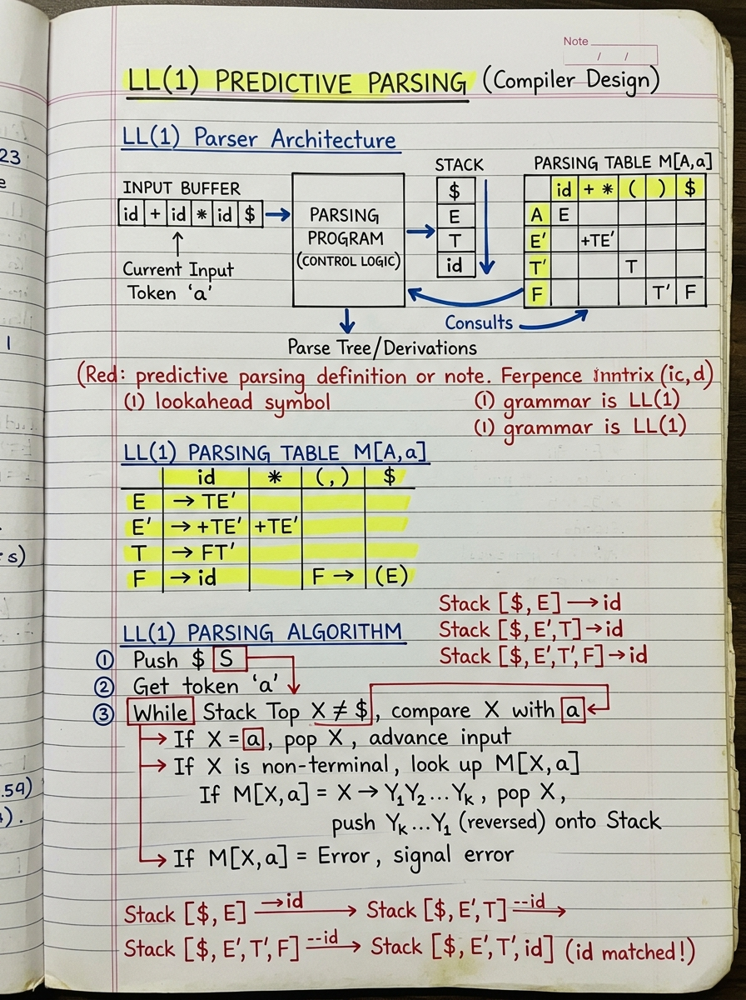
Breaking down the arithmetic grammar, rigorous derivation of FIRST() sets and FOLLOW() sets with reasons
"For the standard arithmetic grammar: E → T E', E' → + T E' | ε, T → F T', T' → * F T' | ε, F → ( E ) | id:
(a) Explain the role of each variable in plain English.
(b) Compute FIRST() sets step-by-step.
(c) Compute FOLLOW() sets step-by-step with explicit derivation reasons."
+ T E' or stop with nothing (ε).* F T' or terminate with nothing (ε).( E ) or an identifier token id.
Definition: FIRST(X) is the set of all terminal symbols that can appear at the very beginning of strings derived from X.
F → ( E ) | id ⇒ starting symbols are terminal ( and id. So: FIRST(F) = { ( , id }T → F T' ⇒ first symbol is F ⇒ FIRST(T) = FIRST(F). So: FIRST(T) = { ( , id }E → T E' ⇒ first symbol is T ⇒ FIRST(E) = FIRST(T). So: FIRST(E) = { ( , id }E' → + T E' | ε ⇒ starts with terminal + or ε. So: FIRST(E') = { + , ε }T' → * F T' | ε ⇒ starts with terminal * or ε. So: FIRST(T') = { * , ε }
Definition: FOLLOW(A) is the set of terminal symbols that can appear immediately to the right of non-terminal A in any valid sentential form.
$. In rule F → ( E ), E is followed by terminal ). So: FOLLOW(E) = { ) , $ }E → T E', E' is at the very end (trailing). So E' inherits FOLLOW(E). So: FOLLOW(E') = { ) , $ }E → T E', T is followed by E'. FIRST(E') = { +, ε }, so + enters FOLLOW(T). Because E' can derive ε, FOLLOW(E) also enters FOLLOW(T). So: FOLLOW(T) = { + , ) , $ }T → F T', T' is trailing at the end. So T' inherits FOLLOW(T). So: FOLLOW(T') = { + , ) , $ }T → F T', F is followed by T'. FIRST(T') = { *, ε }, so * enters FOLLOW(F). Because T' can derive ε, FOLLOW(T) also enters FOLLOW(F). So: FOLLOW(F) = { * , + , ) , $ }
The heart of LL(1) parsing: table format, the 2 filling rules, step-by-step production placement, and the final table
"State the two formal rules for filling an LL(1) parsing table. For every production rule in the arithmetic grammar, show which cell in M[A, a] it enters and why. Draw the final parsing table."
18. Format: A 2D matrix where Rows = Non-Terminals (E, E', T, T', F) and Columns = Terminals (id, +, *, (, ), $).
For production A → α:
For every terminal a ∈ FIRST(α), place:
M[A, a] = A → α
If production can derive empty string (ε):
For every symbol b ∈ FOLLOW(A), place:
M[A, b] = A → ε
E → T E' into M[E, id] and M[E, (].E' → + T E' into M[E', +].E' → ε into M[E', )] and M[E', $].T → F T' into M[T, id] and M[T, (].T' → * F T' into M[T', *].T' → ε into M[T', +], M[T', )], and M[T', $].F → ( E ) into M[F, (].F → id into M[F, id].
| Non-Terminal | id | + | * | ( | ) | $ |
|---|---|---|---|---|---|---|
| E | E → T E' | — | — | E → T E' | — | — |
| E' | — | E' → + T E' | — | — | E' → ε | E' → ε |
| T | T → F T' | — | — | T → F T' | — | — |
| T' | — | T' → ε | T' → * F T' | — | T' → ε | T' → ε |
| F | F → id | — | — | F → ( E ) | — | — |
Simulating string 'id + id * id $' with stack, lookahead matching, table lookups, and flowchart/parse tree
"Trace the complete step-by-step LL(1) parsing of input string 'id + id * id $'. Show the 4 columns: [Step | Stack | Input Buffer | Action]. Explain how stack push/pop operations match input tokens."
Input string: id + id * id $ | Initial Stack: $ E (Start symbol E on top)
E, Lookahead = id. Lookup M[E, id] = E → T E'. Replace E on stack: push E' first, then T ⇒ Stack: $ E' T.T, Lookahead = id. Lookup M[T, id] = T → F T'. Replace T: push T', then F ⇒ Stack: $ E' T' F.F, Lookahead = id. Lookup M[F, id] = F → id. Replace F with id ⇒ Stack: $ E' T' id.id, Lookahead = id. Both are identical terminals! Pop id, advance input pointer ⇒ Stack: $ E' T', Input: + id * id $.T', Lookahead = +. Lookup M[T', +] = T' → ε. T' derives empty, so simply pop T' ⇒ Stack: $ E'.E', Lookahead = +. Lookup M[E', +] = E' → + T E'. Replace E': push in reverse E' T + ⇒ Stack: $ E' T +.+, Lookahead = +. Identical! Pop +, advance input ⇒ Stack: $ E' T, Input: id * id $.T → F T', then F → id ⇒ Match id.T', Lookahead = *. Lookup M[T', *] = T' → * F T'. Push *, Match *.F → id ⇒ Match id.$ ⇒ T' → ε. Trailing E' sees $ ⇒ E' → ε.$ and Input has $ ⇒ ACCEPT 🎉 String is valid!
| Step | Stack (Grows Right) | Input Buffer | Action Applied (from Table M) |
|---|---|---|---|
| 1 | $ E | id + id * id $ | Output: E → T E' |
| 2 | $ E' T | id + id * id $ | Output: T → F T' |
| 3 | $ E' T' F | id + id * id $ | Output: F → id |
| 4 | $ E' T' id | id + id * id $ | ✓ Match id (Pop id, advance input) |
| 5 | $ E' T' | + id * id $ | Output: T' → ε |
| 6 | $ E' | + id * id $ | Output: E' → + T E' |
| 7 | $ E' T + | + id * id $ | ✓ Match + (Pop +, advance input) |
| 8 | $ E' T | id * id $ | Output: T → F T' |
| 9 | $ E' T' F | id * id $ | Output: F → id |
| 10 | $ E' T' id | id * id $ | ✓ Match id (Pop id, advance input) |
| 11 | $ E' T' | * id $ | Output: T' → * F T' |
| 12 | $ E' T' F * | * id $ | ✓ Match * (Pop *, advance input) |
| 13 | $ E' T' F | id $ | Output: F → id |
| 14 | $ E' T' id | id $ | ✓ Match id (Pop id, advance input) |
| 15 | $ E' T' | $ | Output: T' → ε |
| 16 | $ E' | $ | Output: E' → ε |
| 17 | $ | $ | ACCEPT 🎉 (String parsed successfully!) |
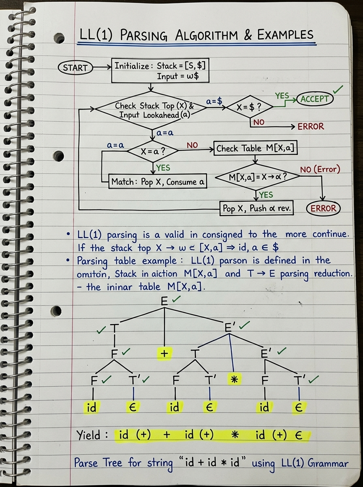
Necessary grammar conditions, formal algorithm, flowchart diagram, advantages, limitations, and one-line visualization
"1. What are the 3 essential conditions for a grammar to be LL(1)?
2. Write the formal LL(1) parsing algorithm and draw its flowchart.
3. Discuss the key advantages and limitations of LL(1) predictive parsers."
Not all Context-Free Grammars are LL(1). For a grammar to be parsed deterministically by an LL(1) parser:
E → E + T | T cause infinite loops in top-down parsers. Must be eliminated algebraically into E → T E', E' → + T E' | ε.A → αβ1 | αβ2), the parser cannot decide which to choose with 1 lookahead token. Common prefix α must be extracted: A → α A', A' → β1 | β2.M[A, a] may contain ≥ 2 production rules. If any cell has a conflict, the grammar is NOT LL(1).
$ S (where S is Start Symbol).$ to the end of input string (w $).X == a, pop X and advance input pointer (MATCH). If X ≠ a, signal Error.M[X, a]. If M[X, a] = X → Y1Y2...Yk, pop X and push Yk...Y1 in reverse order. If blank, signal Error.$, halt and ACCEPT!
O(n) parsing speed.Bottom-up parsing intuition, rightmost derivation in reverse, shift vs reduce operations, and simple walkthrough
"1. What is an LR parser? Explain its bottom-up reduction philosophy with an expression reduction trace.
2. Break down the acronym 'LR' and explain what 'Rightmost Derivation in Reverse' means.
3. Differentiate between SHIFT and REDUCE operations. Walk through string 'ab$' for grammar S → aA, A → b."
An LR Parser is a Bottom-Up Parser. Its primary objective is to read an input token stream and gradually reduce it step-by-step until it contracts cleanly into the grammar's Start Symbol S.
id + idid + id ⟶ (Reduce id → T)T + id ⟶ (Reduce T → E)E + id ⟶ (Reduce id → T)E + T ⟶ (Reduce E + T → E)• Core Philosophy: Smaller syntactic fragments (tokens) are incrementally synthesized into larger grammatical constructs.
The parser scans the source tokens strictly from Left to Right, one token at a time without reversing.
Reductions trace the exact mirror sequence of a canonical Rightmost Derivation from leaves back to the root start symbol.
S ⇒ A B ⇒ a B ⇒ a b (Expands Start Symbol down to string)a b ⇒ a B ⇒ A B ⇒ S (Collapses string up to Start Symbol)
LR Parser ⟶ Bottom-Up Parser ⟶ Shift-Reduce Parser. Hence, all LR family members are fundamentally sophisticated, table-driven shift-reduce parsers.
Takes the next terminal symbol from the input buffer, consumes it, and pushes it onto the parser stack.
Identifies a matching RHS handle on the stack top, pops those symbols, and replaces them with the LHS non-terminal.
[empty] | Input = ab$[a] | Input = b$[a b] | Input = $b, push A ⇒ Stack = [a A] | Input = $a A, push S ⇒ Stack = [S] | Input = $S and input is $ ⇒ ACCEPT! 🎉
Components, ACTION vs GOTO tables, 4 parser actions, why stacks store state numbers, and full simulation
"Explain the architecture of an LR parser with a neat diagram. Describe the roles of ACTION and GOTO tables.
Why does the LR stack store alternating state numbers and symbols? Show the complete state stack trace for string 'ab$'."
$.0 E 1 + 3.
Rows correspond to parser States (0, 1, 2, ...).
• ACTION columns: Terminals (id, +, *, (, ), $)
• GOTO columns: Non-terminals (E, T, F, S, A)
Grammar: (1) S → aA, (2) A → b • String: ab$ • Initial Stack: 0
| Step | Stack (States + Symbols) | Input | ACTION / GOTO Action Taken |
|---|---|---|---|
| 1 | 0 |
ab$ |
ACTION[0, a] = Shift 1 ⇒ Push a and state 1 |
| 2 | 0 a 1 |
b$ |
ACTION[1, b] = Shift 3 ⇒ Push b and state 3 |
| 3 | 0 a 1 b 3 |
$ |
ACTION[3, $] = Reduce 2 (A → b) ⇒ Pop b 3, top state is 1; GOTO[1, A] = 4 ⇒ Push A 4 |
| 4 | 0 a 1 A 4 |
$ |
ACTION[4, $] = Reduce 1 (S → aA) ⇒ Pop a 1 A 4 (4 items), top state is 0; GOTO[0, S] = 5 ⇒ Push S 5 |
| 5 | 0 S 5 |
$ |
ACTION[5, $] = ACCEPT 🎉 (String 'ab' successfully validated!) |
In LL(1), the stack only stores grammar symbols ($ E). In LR parsing, the stack holds states + symbols (0 E 1 + 3).
Why? Because at every instant, the parser must decide: "Should I SHIFT or REDUCE?" The state on top of the stack encodes the complete history of what has already been recognized across the grammar, allowing deterministic decisions in O(1) time without rescanning the stack!
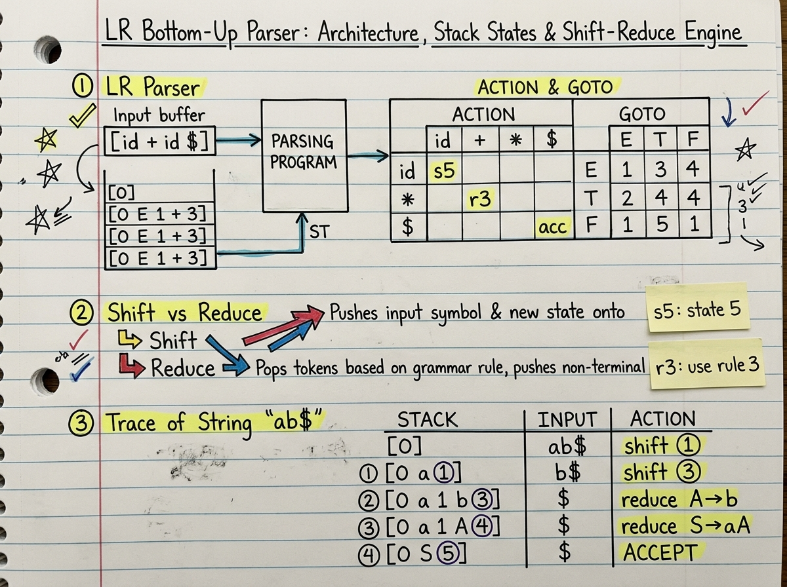
Figure 57.1: Handwritten notes illustrating LR parsing program, alternating stack states, ACTION/GOTO tables, and the 'ab$' trace.
Demystifying the dot marker, complete items, augmented grammar, closure operation, and GOTO transitions
"1. What is an LR(0) item? Explain the physical meaning of the dot '.' marker at different positions.
2. What is a 'complete item' and why does it trigger a reduce action?
3. Define Augmented Grammar, Closure, and GOTO operations with clear mathematical and grammar examples."
An LR(0) Item of a grammar G is a production rule with a special marker dot • placed at some position in its Right-Hand Side (RHS).
E → E + TE → • E + T ⇒ Initial: We expect to see a string derivable from E + T next (nothing processed yet).E → E • + T ⇒ Partially recognized: We have successfully processed E; next we expect token +.E → E + • T ⇒ Advanced: We have processed E +; next we expect to see T.E → E + T • ⇒ COMPLETE ITEM: Entire RHS E + T has been recognized! Ready to REDUCE!
An item of the form A → α • with the dot at the extreme right is called a Complete Item (or Reduce Item). It signals to the parser that the handle α is fully present on top of the stack and can be collapsed into non-terminal A.
If G has start symbol S, the augmented grammar G' introduces a brand new start symbol S' and rule S' → S.
Why is this necessary? It creates a unique, unmistakable signal: when the parser reduces by S' → S, it immediately declares ACCEPT and terminates execution without any ambiguity!
Rule: If an item set contains [A → α • B β] where a non-terminal B stands immediately after the dot, then add every production [B → • γ] into the closure. Repeat until no more items can be added.
Example: In S' → • S, since dot precedes non-terminal S, we expand to include S → • aA.
Definition: GOTO(I, X) represents the next state reached when the parser in state I recognizes/consumes symbol X (terminal or non-terminal). It shifts the dot past X:
I_0 --X--> I_1
LR(0) vs SLR(1) vs CLR(1) vs LALR(1), real-world language analogy, and comprehensive 10-row comparison table
"1. Classify and compare the 4 variants of LR parsers: LR(0), SLR(1), CLR(1), and LALR(1) in terms of lookaheads and power.
2. Construct a comprehensive comparison table between LL(1) and LR parsers covering at least 8 distinct technical dimensions."
Zero lookahead. Places REDUCE actions across all terminal columns. Simplest to construct, but smallest grammar coverage and highly prone to conflicts.
Uses 1 token lookahead via FOLLOW(A). Puts reduce actions only in columns matching FOLLOW of the reduced non-terminal, resolving many LR(0) conflicts.
Uses full LR(1) items [A → α • β, a] carrying explicit lookaheads. Most powerful LR parser, but table size explodes with hundreds of states.
Merges CLR(1) states that share identical core items, reducing table size back to SLR(1) dimensions while retaining nearly all CLR(1) power. Used in Yacc / Bison!
LR(0) ⊂ SLR(1) ⊂ LALR(1) ⊂ CLR(1)
Consider parsing the English sentence: "I eat mango"
I ⟶ Reduced to Subjecteat ⟶ Reduced to Verbmango ⟶ Reduced to Object• Synthesizing small raw words into clauses, and clauses into a complete sentence, perfectly mirrors how bottom-up LR parsers work!
| Feature / Dimension | LL(1) Parser | LR Parser Family |
|---|---|---|
| 1. Parsing Direction | Top-Down (Start symbol → leaves) | Bottom-Up (Leaves → Start symbol) |
| 2. Derivation Order | Leftmost Derivation | Rightmost Derivation in Reverse |
| 3. Operational Method | Predictive non-backtracking | Shift-Reduce handle finding |
| 4. Stack Contents | Grammar symbols only ($ S) |
Grammar symbols + States (0 E 1 + 3) |
| 5. Parsing Table | Single table: M[Non-terminal, Terminal] | Two tables: ACTION (terminals) + GOTO (non-terminals) |
| 6. Left Recursion | Not allowed directly (Causes infinite loop) | Allowed naturally without transformation |
| 7. Grammar Coverage | More restrictive language class | Much larger, highly expressive grammar class |
| 8. Core Operations | Expand non-terminal & Match terminal | Shift token, Reduce handle, Accept, Error |
| 9. Table Construction Engine | FIRST() and FOLLOW() sets | LR items, Closure(), and GOTO() automaton |
| 10. Common Parser Examples | LL(1), Recursive Descent | LR(0), SLR(1), CLR(1), LALR(1) (Yacc, Bison) |
The exact chronological study sequence, diagnosing Shift-Reduce & Reduce-Reduce conflicts, and viva checklist
"1. Outline the complete 13-step conceptual roadmap required to master LR parsing in compiler design.
2. What causes Shift-Reduce (S/R) and Reduce-Reduce (R/R) conflicts in LR parsing tables? Provide item representations for both."
Follow this strict chronological order to prepare for semester exams and technical interviews:
Occurs when a state contains both an item ready to SHIFT and a complete item ready to REDUCE on the same lookahead token:
A → α • a β (Wants to SHIFT a)B → γ • (Wants to REDUCE by B → γ)
Classic Example: Dangling-else ambiguity!
Occurs when a state contains two distinct COMPLETE items that simultaneously request a reduction on the exact same lookahead token:
A → α • (Wants to REDUCE by A → α)B → β • (Wants to REDUCE by B → β)
Verdict: Fatal ambiguity! Parser cannot choose which non-terminal to synthesize.
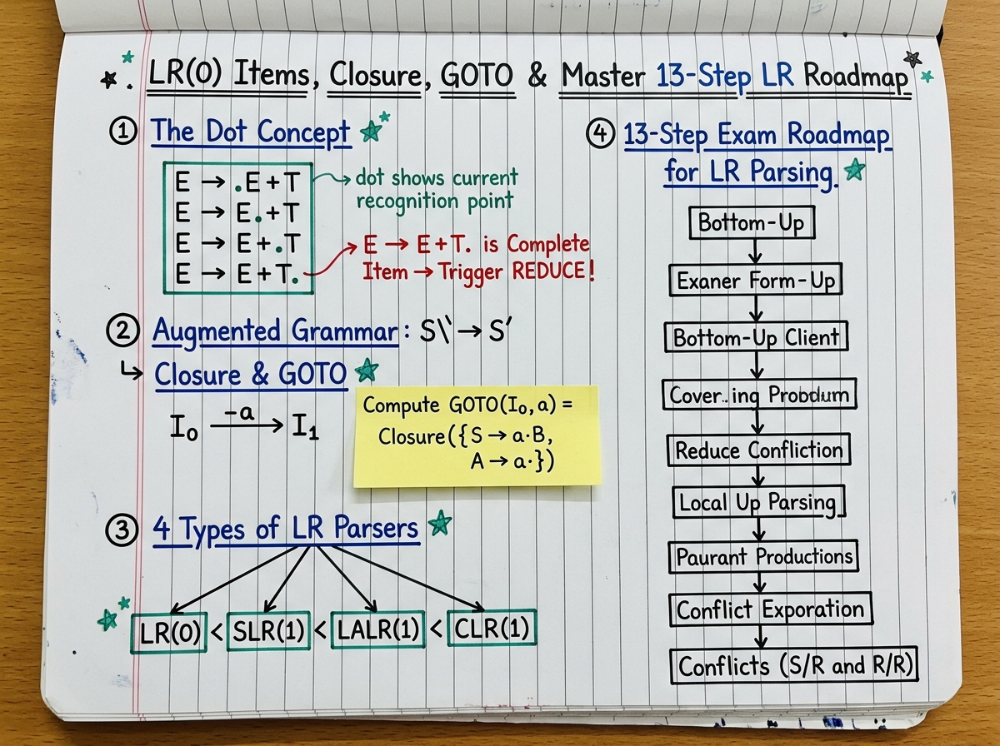
Figure 60.1: Handwritten notes illustrating the dot progression, augmented grammar, closure/GOTO transition, 4 LR families, and the complete 13-milestone exam roadmap.
Simple LR definition, the (1) lookahead formula, augmented grammar, closure, and building states I0 through I6
"1. Define the SLR(1) parser. What role does the '(1)' lookahead play compared to LR(0) and CLR(1)?
2. For the grammar S → CC, C → cC | d, construct the Augmented Grammar, compute the Canonical Collection of LR(0) items (I0 to I6), and show all GOTO transitions."
SLR stands for Simple LR. An SLR(1) parser is a bottom-up, table-driven shift-reduce parser that uses LR(0) items to construct state sets and consults FOLLOW sets of non-terminals to make deterministic reduction decisions.
SLR(1) = LR(0) Items + FOLLOW Sets
S' → • S, S' → S •S → • C C, S → C • C, S → C C •C → • c C, C → c • C, C → c C •C → • d, C → d •
C → c C • • (Complete Item: Reduce C → cC)Computing FOLLOW(S) and FOLLOW(C), the exact reduction placement rules, and the complete 7-state table
"1. Compute the FOLLOW sets for non-terminals S and C.
2. Construct the complete SLR(1) ACTION and GOTO parsing table.
3. Explain why reduce action R3 appears in state 4 under columns c, d, and $, but R1 appears in state 5 only under $."
Since S is the start symbol of the grammar:
• $ ∈ FOLLOW(S)
• FOLLOW(S) = { $ }
From S → C C: First C is followed by C ⇒ FIRST(C) = {c, d}.
Second C is at the end of S ⇒ inherits FOLLOW(S) = { $ }.
• FOLLOW(C) = { c, d, $ }
Grammar Rules: (1) S → CC, (2) C → cC, (3) C → d
| State | ACTION (Terminals) | GOTO (Non-Terminals) | |||
|---|---|---|---|---|---|
| c | d | $ | S | C | |
| 0 | S3 | S4 | — | 1 | 2 |
| 1 | — | — | ACCEPT | — | — |
| 2 | S3 | S4 | — | — | 5 |
| 3 | S3 | S4 | — | — | 6 |
| 4 | R3 | R3 | R3 | — | — |
| 5 | — | — | R1 | — | — |
| 6 | R2 | R2 | R2 | — | — |
C → d • (Rule 3). In SLR(1), reduction A o lpha is placed only under columns matching ext{FOLLOW}(A). Because ext{FOLLOW}(C) = \{c, d, \\}$, we put R3 into ACTION[4, c], ACTION[4, d], and ACTION[4, $].C → c C • (Rule 2). Similarly, we consult ext{FOLLOW}(C) = \{c, d, \\}$ ⇒ R2 placed under c, d, and $.S → C C • (Rule 1). We consult ext{FOLLOW}(S) = \{\\}$. Hence, R1 is placed strictly under column $, avoiding blank conflict cells in columns c and d!
Executing string cdd$ with 8 precise steps, key architectural comparisons, and the SLR mental formula
"Trace the complete execution of input string 'cdd$' on the SLR(1) parsing table using columns [Step | Stack | Input | Action].
Compare SLR(1) with LR(0) and LL(1) across key technical dimensions."
| Step | Stack (States + Symbols) | Input | Action / GOTO Logic |
|---|---|---|---|
| 1 | 0 |
cdd$ |
ACTION[0, c] = S3 ⇒ Shift c, push state 3 |
| 2 | 0 c 3 |
dd$ |
ACTION[3, d] = S4 ⇒ Shift d, push state 4 |
| 3 | 0 c 3 d 4 |
d$ |
ACTION[4, d] = R3 (C → d) ⇒ Pop d 4, top is 3; GOTO[3, C] = 6 ⇒ Push C 6 |
| 4 | 0 c 3 C 6 |
d$ |
ACTION[6, d] = R2 (C → cC) ⇒ Pop c 3 C 6 (4 items), top is 0; GOTO[0, C] = 2 ⇒ Push C 2 |
| 5 | 0 C 2 |
d$ |
ACTION[2, d] = S4 ⇒ Shift d, push state 4 |
| 6 | 0 C 2 d 4 |
$ |
ACTION[4, $] = R3 (C → d) ⇒ Pop d 4, top is 2; GOTO[2, C] = 5 ⇒ Push C 5 |
| 7 | 0 C 2 C 5 |
$ |
ACTION[5, $] = R1 (S → CC) ⇒ Pop C 2 C 5 (4 items), top is 0; GOTO[0, S] = 1 ⇒ Push S 1 |
| 8 | 0 S 1 |
$ |
ACTION[1, $] = ACCEPT 🎉 (String 'cdd' is valid!) |
FOLLOW(A), eliminating many S/R conflicts.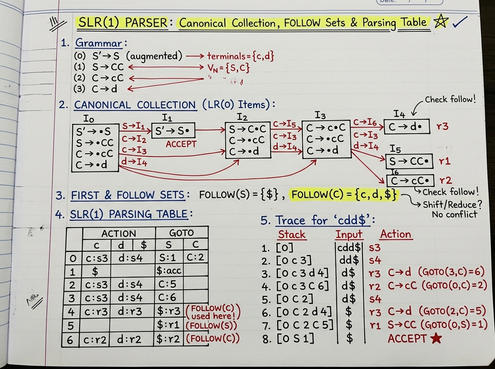
Figure 63.1: Handwritten notes showing canonical items I0-I6, FOLLOW sets, parsing table, and the 'cdd$' execution trace.
Why SLR's global FOLLOW is too broad, LR(1) item anatomy [A → α • β, a], closure via FIRST(βa), and CLR advantages
"1. What is a CLR(1) / Canonical LR(1) parser? How does it overcome the limitations of SLR(1)?
2. Define an LR(1) item. How is the lookahead calculated during the CLOSURE operation using FIRST(βa)?
3. Explain why CLR(1) is the most powerful LR parser but often avoided in practice due to table size explosion."
CLR(1) stands for Canonical LR(1). While SLR(1) uses global FOLLOW(A) across all states, CLR(1) attaches an explicit, individual lookahead token directly to each item:
[A → α • β, a]A → α • β = Standard LR(0) Core (Production rule with dot marker)a = Lookahead terminal symbol (or endmarker $)
• Formula: LR(1) Item = LR(0) Core + 1 Specific Lookahead Token
[A → α • B β, a], then for every grammar production B → γ, we add:[S' → • S, $] ⇒ Dot precedes S, β is empty, lookahead is $ ⇒ [S → • C C, $].FIRST(C $) = FIRST(C) = {c, d}![C → • c C, c] • [C → • c C, d][C → • d, c] • [C → • d, d]
A complete item [C → d •, d] reduces only when lookahead is d. It will NEVER reduce on c or $. This surgical precision eliminates virtually all spurious conflicts found in SLR(1).
Because the same production rules with different lookaheads create distinct states, CLR(1) tables can have thousands of states for practical programming languages, requiring immense memory and computation.
The core concept, merging identical LR(0) cores (I5 + I8 → I58), table reduction, and conflict warnings
"1. What is an LALR(1) parser? Explain the concept of the 'LR(0) Core' with an example.
2. How does LALR(1) merge CLR(1) states? Show how state I5 and I8 merge into I58.
3. Can merging states introduce parsing conflicts? Explain why LALR(1) can introduce Reduce-Reduce conflicts but never Shift-Reduce conflicts."
LALR(1) stands for Look-Ahead LR. It takes the full CLR(1) collection of states, finds all states that share the exact same LR(0) core (ignoring lookaheads), and merges them into a single state by taking the union of their lookaheads.
[C → c • C, c/d] • CLR State I8: [C → c • C, $]C → c • C.[C → c • C, c / d / $]• Result: An LALR(1) table has the exact same number of states as SLR(1), but retains almost all of CLR(1)'s parsing power!
I36, I47, I58), combining lookaheads.
If State A had [X → α •, a] and State B had [Y → β •, a] that were separate in CLR, merging them can bring two reductions onto the same lookahead a, creating a new R/R conflict!
Because merging only combines states with identical shift targets, merging can NEVER produce a new Shift-Reduce conflict that was not already present in the CLR parser!
Comprehensive comparison of LR(0), SLR(1), LALR(1), and CLR(1), power pyramid, and memory tricks
"Compare all 4 variants of LR Parsers: LR(0), SLR(1), LALR(1), and CLR(1) in a comprehensive comparison matrix.
State their power hierarchy and table size relationship. Give the 1-line exam definition for each parser."
| Feature | LR(0) | SLR(1) | LALR(1) | CLR(1) |
|---|---|---|---|---|
| Full Form | LR(0) | Simple LR | Look-Ahead LR | Canonical LR |
| Item Type | LR(0) items | LR(0) items | Merged LR(1) items | LR(1) items [A→α•β, a] |
| Lookahead | No Lookahead | FOLLOW(A) | Combined Lookaheads | Exact 1 Lookahead |
| Total States | Few (k states) | Few (k states) | Few (Same k states!) | Huge (Explosion) |
| Table Size | Small | Small | Small / Practical | Very Large |
| Grammar Power | Lowest | Moderate | High | Highest |
| Reduction Basis | All columns | FOLLOW(A) columns | Specific lookaheads | Exact lookaheads |
| Common Use | Academic | Teaching | Yacc, Bison, C/C++ | Theoretical Benchmark |
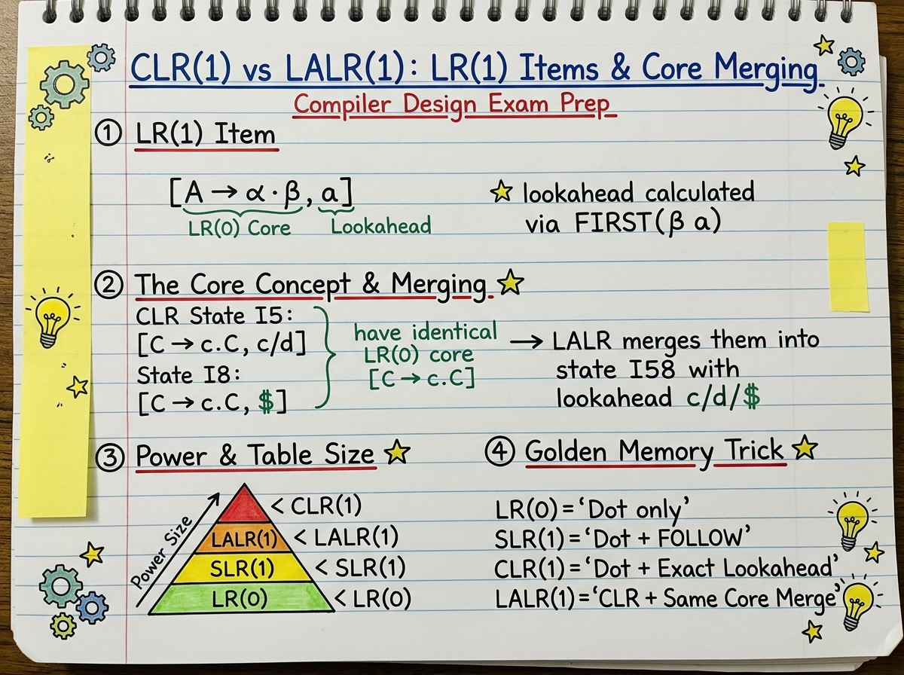
Figure 66.1: Handwritten notes illustrating LR(1) items, lookahead calculation, LALR state merging, power pyramid, and memory tricks.
Exhaustive 10-state canonical collection (I0 to I9), 10-row parsing table, and 8-step string trace for 'cdd$'
"For the grammar S → CC, C → cC | d:
(a) Construct the complete Canonical Collection of LR(1) items (I0 through I9) with exact lookaheads.
(b) Construct the 10-state CLR(1) ACTION and GOTO parsing table.
(c) Trace the step-by-step parsing of input string 'cdd$'."
Grammar Rules: (1) S → CC, (2) C → cC, (3) C → d • Augmented: (0) S' → S, $
| State | ACTION (Terminals) | GOTO (Non-Terminals) | |||
|---|---|---|---|---|---|
| c | d | $ | S | C | |
| 0 | S3 | S4 | — | 1 | 2 |
| 1 | — | — | ACCEPT | — | — |
| 2 | S6 | S7 | — | — | 5 |
| 3 | S3 | S4 | — | — | 8 |
| 4 | R3 | R3 | — | — | — |
| 5 | — | — | R1 | — | — |
| 6 | S6 | S7 | — | — | 9 |
| 7 | — | — | R3 | — | — |
| 8 | R2 | R2 | — | — | — |
| 9 | — | — | R2 | — | — |
0 | Input: cdd$ ⇒ ACTION[0, c] = S3 ⇒ Stack: 0 c 30 c 3 | Input: dd$ ⇒ ACTION[3, d] = S4 ⇒ Stack: 0 c 3 d 40 c 3 d 4 | Input: d$ ⇒ ACTION[4, d] = R3 (C → d) ⇒ Pop d 4, top 3, GOTO[3, C]=8 ⇒ Stack: 0 c 3 C 80 c 3 C 8 | Input: d$ ⇒ ACTION[8, d] = R2 (C → cC) ⇒ Pop c 3 C 8, top 0, GOTO[0, C]=2 ⇒ Stack: 0 C 20 C 2 | Input: d$ ⇒ ACTION[2, d] = S7 ⇒ Stack: 0 C 2 d 70 C 2 d 7 | Input: $ ⇒ ACTION[7, $] = R3 (C → d) ⇒ Pop d 7, top 2, GOTO[2, C]=5 ⇒ Stack: 0 C 2 C 50 C 2 C 5 | Input: $ ⇒ ACTION[5, $] = R1 (S → CC) ⇒ Pop C 2 C 5, top 0, GOTO[0, S]=1 ⇒ Stack: 0 S 10 S 1 | Input: $ ⇒ ACTION[1, $] = ACCEPT 🎉
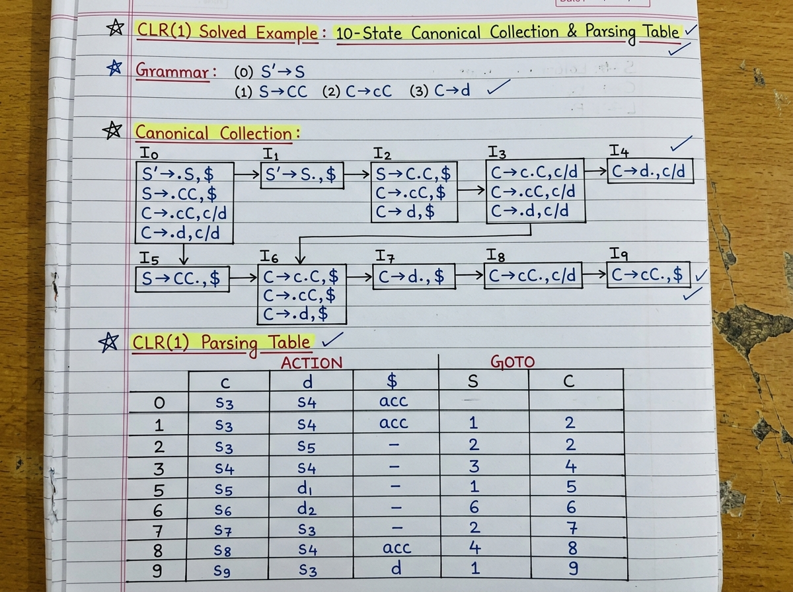
Figure 67.1: Handwritten notes illustrating all 10 CLR(1) states with explicit lookaheads and the complete 10-row parsing table.
Collapsing CLR(1) states with identical LR(0) cores, building the 7-state LALR table, and executing 'cdd$'
"From the 10 CLR(1) states of grammar S → CC, C → cC | d:
(a) Identify which states have identical LR(0) cores and merge them.
(b) Construct the compact 7-state LALR(1) parsing table.
(c) Trace the step-by-step parsing of 'cdd$' and verify that LALR retains the exact state count of SLR(1)."
We examine the 10 CLR(1) states from Page 67 and group those with identical core productions:
{ C → c • C, C → • c C, C → • d }{c, d}, I6 has {$} ⇒ Combined lookahead = {c, d, $}{ C → d • }{c, d}, I7 has {$} ⇒ Combined lookahead = {c, d, $}{ C → c C • }{c, d}, I9 has {$} ⇒ Combined lookahead = {c, d, $}I0, I1, I2, I5 remain unchanged.| State | ACTION (Terminals) | GOTO (Non-Terminals) | |||
|---|---|---|---|---|---|
| c | d | $ | S | C | |
| 0 | S36 | S47 | — | 1 | 2 |
| 1 | — | — | ACCEPT | — | — |
| 2 | S36 | S47 | — | — | 5 |
| 36 | S36 | S47 | — | — | 89 |
| 47 | R3 | R3 | R3 | — | — |
| 5 | — | — | R1 | — | — |
| 89 | R2 | R2 | R2 | — | — |
0 | Input: cdd$ ⇒ ACTION[0, c] = S36 ⇒ Stack: 0 c 360 c 36 | Input: dd$ ⇒ ACTION[36, d] = S47 ⇒ Stack: 0 c 36 d 470 c 36 d 47 | Input: d$ ⇒ ACTION[47, d] = R3 (C → d) ⇒ Pop d 47, top 36, GOTO[36, C]=89 ⇒ Stack: 0 c 36 C 890 c 36 C 89 | Input: d$ ⇒ ACTION[89, d] = R2 (C → cC) ⇒ Pop c 36 C 89, top 0, GOTO[0, C]=2 ⇒ Stack: 0 C 20 C 2 | Input: d$ ⇒ ACTION[2, d] = S47 ⇒ Stack: 0 C 2 d 470 C 2 d 47 | Input: $ ⇒ ACTION[47, $] = R3 (C → d) ⇒ Pop d 47, top 2, GOTO[2, C]=5 ⇒ Stack: 0 C 2 C 50 C 2 C 5 | Input: $ ⇒ ACTION[5, $] = R1 (S → CC) ⇒ Pop C 2 C 5, top 0, GOTO[0, S]=1 ⇒ Stack: 0 S 10 S 1 | Input: $ ⇒ ACTION[1, $] = ACCEPT 🎉
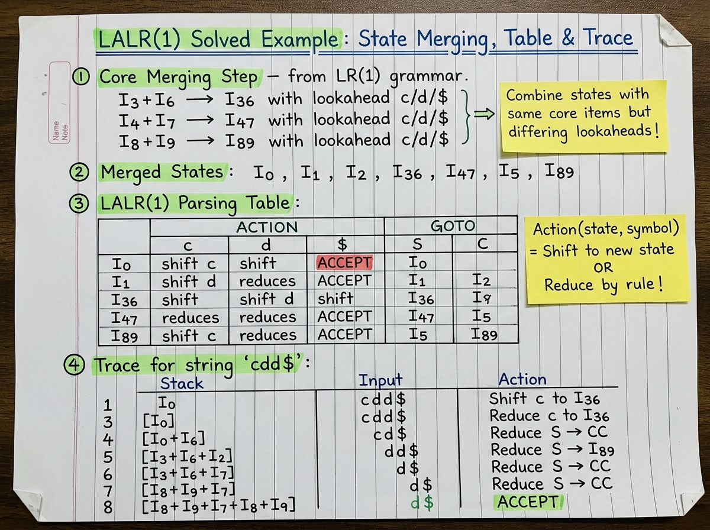
Figure 68.1: Handwritten notes illustrating the core merging step (I36, I47, I89), the 7-row LALR table, and the 'cdd$' trace.